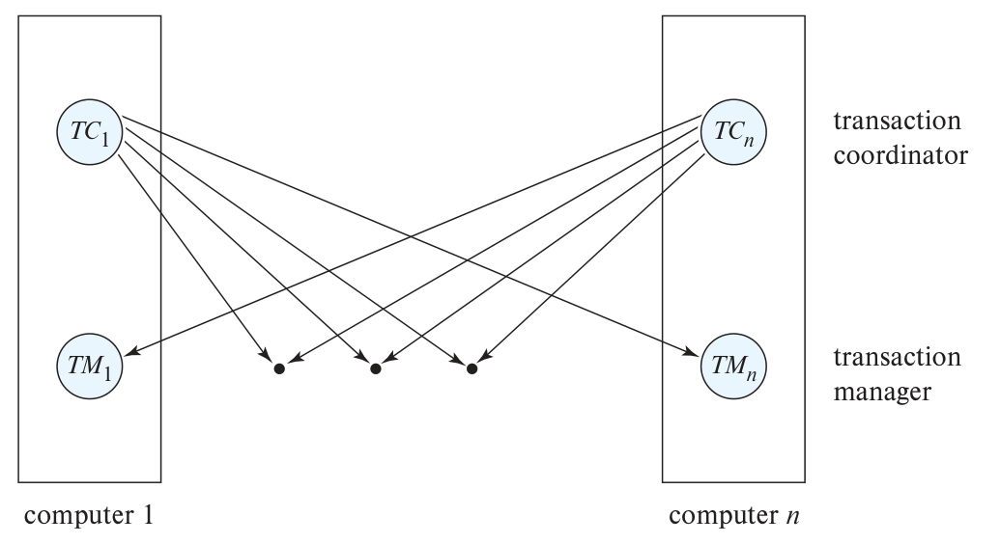
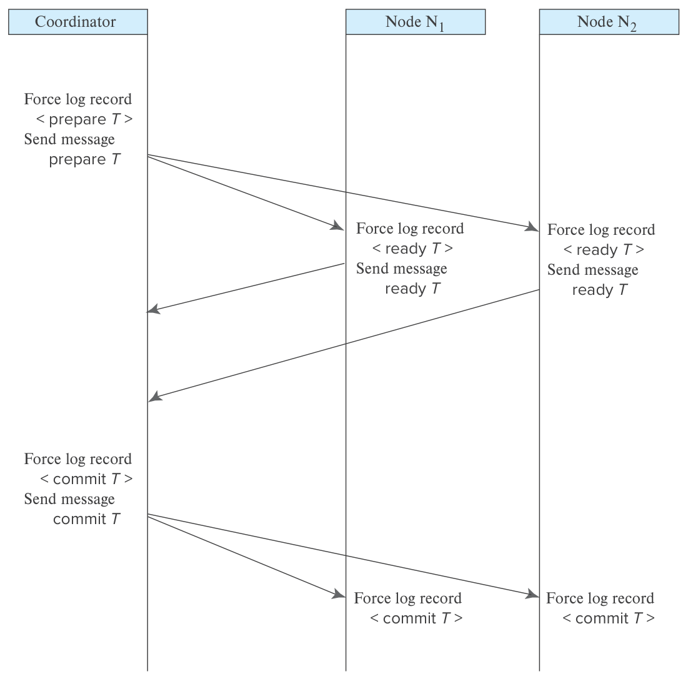
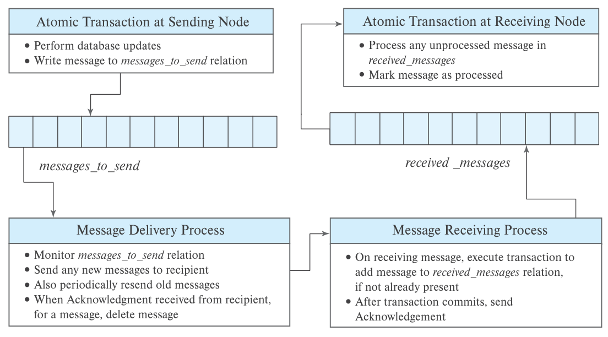
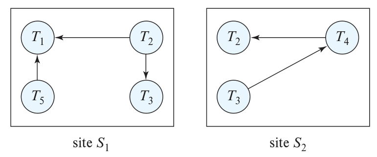
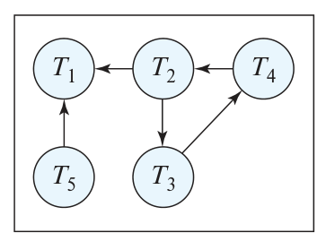
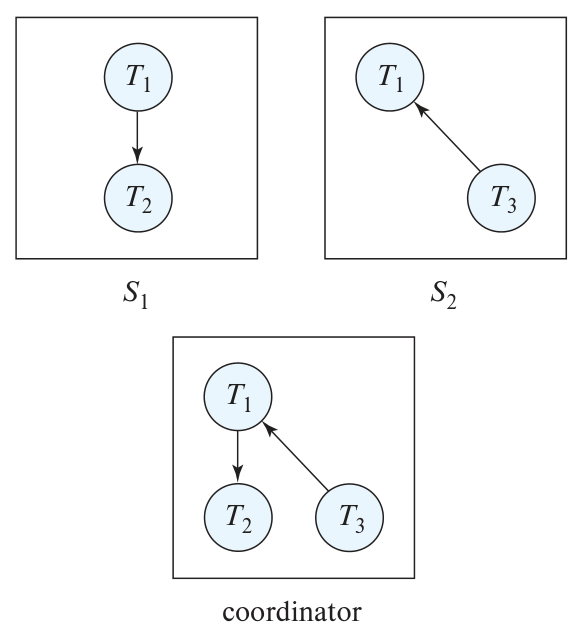
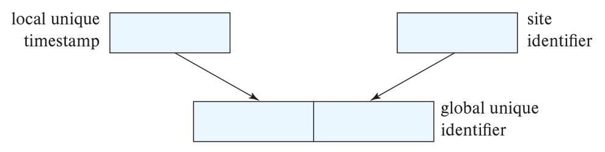
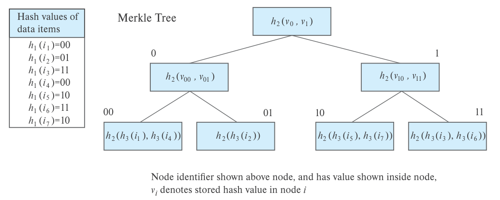
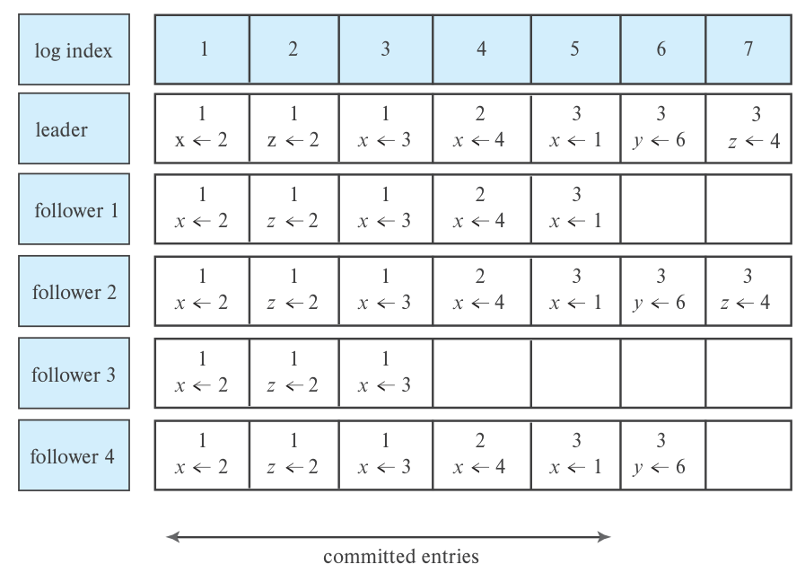
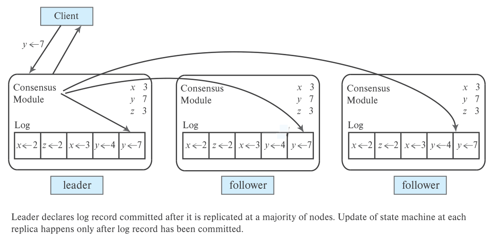

第 23 章 并行与分布式事务处理
前面已经介绍集中式数据库的事务处理：第 18 章讨论并发控制，第 19 章讨论恢复。本章转向并行与分布式数据库。除了并发控制和恢复，这类系统还需要处理数据复制及部分节点故障。
两类数据库都由多个可能独立失效的节点组成。从事务处理角度看，主要区别在于：分布式数据库的远程访问延迟通常更高、带宽更低，并行数据库的节点则位于同一数据中心。跨地域部署更容易出现网络分区和消息延迟，但数据中心内部也不能完全避免；无论何时发生，事务处理都必须保持正确。
因此，多数事务处理技术同时适用于两者。少数存在区别的情况会特别说明。本章提到某项技术适用于分布式数据库时，除非另有说明，也包括并行数据库。
23.1 节给出分布式事务处理模型，23.2 节介绍保证分布式事务原子性的提交协议。
23.3 节将传统并发控制扩展到分布式环境；23.4 节讨论数据复制时的并发控制；23.5 节进一步讨论多版本控制和异构数据库。
23.6 节讨论较弱一致性下的复制。
许多技术依赖协调器保证事务处理的一致性与效率。23.7 节介绍如何在分布式环境中选出能应对故障的协调器。最后，23.8 节讨论分布式共识及其解法，以及如何通过日志复制构建容错服务。
23.1 分布式事务
分布式系统通常通过事务访问数据，并要求满足 17.1 节的 ACID 性质。本地事务只访问和更新一个本地数据库；全局事务则涉及多个本地数据库。本地事务可以使用第 17—19 章的方法保证 ACID，全局事务则更复杂：多个节点参与执行，任何节点或节点间通信链路失效，都可能导致错误结果。
本节介绍系统结构与故障类型，后面讨论怎样在故障下仍满足 ACID。这些故障也可能发生在并行数据库中，下面的方法同样适用。
23.1.1 系统结构
考虑多个可独立失效的节点。它们可以位于同一数据中心，也可以分布在不同地域；两种情况下的系统结构，以及事务隔离性、原子性的问题和解法都相似。
这里的模型不适用于各组件不能独立失效的共享内存并行数据库。那类系统通常整体运行或整体失效，而且只有一份恢复日志，采用集中式数据库的并发控制与恢复技术更合适。
每个节点都有自己的本地事务管理器，负责该节点事务的 ACID 性质。
各事务管理器协作完成全局事务。抽象来看，每个节点包含两个子系统：- 事务管理器（transaction manager）：管理访问本节点数据的事务或子事务，既包括只在本节点运行的本地事务，也包括全局事务的一部分。 - 事务协调器（transaction coordinator）：协调由本节点发起的本地事务和全局事务。
整体架构见图 23.1。

图 23.1 系统架构。 每台计算机有事务管理器 TM 和事务协调器 TC；两类组件分别管理本地执行与跨节点协调。
事务管理器与集中式系统中的结构相似，主要负责：- 维护恢复日志。 - 参与相应并发控制协议，协调本节点上同时执行的事务。
为了支持分布式执行，恢复与并发控制机制都需要调整。
集中式环境中，事务只访问一个节点，无须单独设置事务协调器。分布式协调器负责本节点发起的每笔事务，包括：- 启动事务。 - 将事务划分为多个子事务，发送到适当节点执行。 - 协调事务结束，使所有节点一起提交，或一起中止。
23.1.2 系统故障类型
分布式系统同样会发生软件错误、硬件错误或磁盘崩溃，还需要处理额外的故障类型。基本类别包括：- 节点失效。 - 消息丢失。 - 通信链路失效。 - 网络分区。
消息可能丢失或损坏，系统通常通过 TCP/IP 等传输控制协议处理，细节见计算机网络教材。
若 A、B 两个节点没有直接相连，消息必须经过一系列链路转发。某条链路失效后，可以尝试改走其他路径；有时仍能到达目的地，有时却让某些节点之间完全失去连接。系统被分成两个或多个互不连通的子系统时，称为网络分区，每个子系统称为一个分区。一个分区也可能只有一个节点。
23.2 提交协议
要保证原子性，执行事务 T 的所有节点必须就最终结果达成一致：全部提交，或者全部中止。T 的协调器需要执行提交协议来保证这一点。
最简单、使用也最广泛的协议之一是两阶段提交（two-phase commit，2PC），下面详细介绍。
23.2.1 两阶段提交
先介绍正常执行，再讨论故障处理、恢复与并发控制。
假设事务 T 由节点 Nᵢ 发起，该节点的事务协调器为 Cᵢ。
23.2.1.1 提交过程
T 执行结束，也就是所有参与节点都向 Cᵢ 报告本地执行完成后，Cᵢ 启动 2PC。
阶段 1：准备。 Cᵢ 将 <prepare T> 写入日志并强制落到稳定存储，再向所有参与节点发送 prepare T。各节点判断是否愿意提交自己的部分：
- 不愿意时，记录
<no T>，回复abort T。 - 愿意时，记录
<ready T>，并将包括 T 的全部记录在内的日志强制写入稳定存储，再回复ready T。
阶段 2：决定。 Cᵢ 收到所有节点的 ready，或至少一个节点的 abort 后，便能作出决定。只有全部参与者回复 ready 才能提交，其他情况必须中止。协调器记录 <commit T> 或 <abort T>，并强制写入稳定存储。至此，事务结果已经确定。
随后，协调器将 commit T 或 abort T 发给所有参与者。节点把对应结果写入自己的日志，再提交或中止事务。
节点可能失效，协调器不能无限等待。发出 prepare 后超过预定时间，若仍有节点没有回应，就可以决定中止，执行与收到 abort 相同的处理。
图 23.2 展示 N₁、N₂ 都愿意提交时的成功执行。
若任何节点回复否定消息，协调器就向所有节点发送 abort T，各节点随之中止。

图 23.2 两阶段提交成功执行。 Coordinator 为协调器，Node 为参与节点。先强制写入 prepare 日志并发出准备消息；参与者强制写入 ready 日志后回应；协调器将 commit 决定落盘，再通知两节点提交并记录。图中的 Force log record 表示强制日志落盘，Send message 表示发送消息。
节点在发出 ready T 前，可以无条件中止 T。写入 <ready T> 后，T 在该节点进入就绪状态。ready 实际上是一项承诺：今后服从协调器的提交或中止决定。为保证即使随后崩溃也能兑现承诺，相关信息必须先存入稳定存储。事务取得的锁还要继续保持，直到事务结束，即使中间发生节点故障也一样，详见 23.2.1.3 节。
提交需要全体一致，因而只要一个节点回复 abort，T 就只能中止。协调器所在节点 Nᵢ 本身也是参与者，它也可以单方面决定中止。最终结果在协调器把决定写入日志并强制落盘时确定。
有些实现要求参与节点在第二阶段结束时回复 acknowledge T。协调器收到全部确认后，记录 <complete T>，才可以丢弃 T 的信息。在此之前，某个因网络或临时故障而未收到决定的节点，可能再次查询结果，协调器必须记得原决定。
23.2.1.2 故障处理
2PC 对不同故障采取不同处理。
参与节点失效。 如果 Cᵢ 尚未收到该节点的 ready，就按它回复 abort 处理；如果已经收到 ready，则忽略该节点暂时失效，继续正常的提交协议。
参与节点 Nₖ 恢复时，检查日志确定故障时尚在执行的事务结果。对于 T，分为以下情况：- 已有 <commit T>：执行 redo(T)。
- 已有
<abort T>：执行undo(T)。
- 只有
<ready T>：向 Cᵢ 查询。若得知提交，则 redo；若得知中止，则 undo。协调器不可用时，向其他节点发送querystatus T。其他节点查阅日志，回复 T 是否在本地执行及其结果。若没人知道最终决定，Nₖ 既不能自行提交，也不能自行中止，只能等待。
Nₖ 定期重发状态查询，直到有掌握结果的节点恢复。协调器所在节点总能提供确定结果所需的信息。
- 没有 T 的 abort、commit 或 ready 控制记录：说明节点在回复 prepare 之前就失效了，协调器必须中止 T，因此 Nₖ 执行
undo(T)。
协调器失效。 参与节点尝试确定 T 的结果，但某些情况下只能等待协调器恢复：- 某个活动节点已有 <commit T>：必须提交。
- 某个活动节点已有
<abort T>：必须中止。
- 某个活动节点没有
<ready T>：它不可能发送过 ready，协调器便不可能决定提交。协调器可能已经决定中止，因此可以直接中止，无须等待。
- 以上情况均不满足：所有活动节点都只有 ready，没有 commit 或 abort。无法判断协调器是否已作决定及决定内容，必须等待 Cᵢ 恢复。
在结果未明期间，T 可能继续占用资源，例如持有活动节点上的数据锁。协调器可能数小时甚至数天后才能恢复，其间其他事务会被迫等待，导致正常节点上的数据也无法访问。这称为阻塞问题（blocking problem）：T 被阻塞，等待协调器恢复。
网络分区。 存在两种情况：1. 协调器与全部参与者仍在同一分区，协议不受影响。
- 它们分属不同分区。每个分区都把其他分区的节点视为失效。未与协调器连通的节点按协调器失效处理；协调器及其所在分区则按其他参与节点失效处理。
2PC 的主要缺点由此可见：协调器失效可能造成阻塞，提交或中止决定要推迟到其恢复之后。23.2.2 节讨论怎样缓解这一限制。
23.2.1.3 恢复与并发控制
节点重新启动后，可以使用 19.4 节等恢复算法，但需要特别处理未决事务（in-doubt transactions）：日志中存在 ready，却没有 commit 或 abort。节点必须按上一小节的方法，联系其他节点查明结果。
若要求所有未决事务都提交或回滚后才恢复正常处理，启动可能很慢：查询状态需要联系多个节点，协调器失效且其他节点也不知道结果时，还可能阻塞，导致该节点长时间不可用。
为避免整节点等待，可以把锁信息记入日志。假设并发控制使用加锁，将 <ready T> 改为 <ready T, L>，L 列出 T 当时持有的全部写锁。节点完成本地恢复后，为每个未决事务重新获取日志中记录的这些写锁。
全部锁恢复后，即使未决事务结果尚未确定，节点也能开始处理新事务。旧事务的提交或回滚与新事务并行进行，缩短恢复等待。只有与未决事务写锁冲突的新事务，需要等相关旧事务最终提交或回滚。
23.2.2 避免提交期间阻塞
2PC 的阻塞会影响持有热门数据锁的事务，进一步阻碍其他事务，因此系统设计者需要认真处理。
可以让多个节点共同参与提交决定，采用容错分布式共识。只要其中多数仍存活并能互相通信，就有机会避免协调器单点故障引起的阻塞。23.8 节详细讨论，这里先概述。
分布式共识要求 n 个节点对同一个决定达成一致，这里决定的是 T 提交还是中止。各节点取得决策输入并投票。协议必须保证，即使部分节点失效或出现分区，获知决定的节点也都得到同一结果；并且，只要多数参与者仍存活、互相连通，就不应一直阻塞。
常用协议包括 Paxos 和 Raft。它们都利用投票：某项决定只有得到参与节点的多数同意，才能通过。
在有了共识服务后，协调器不再只在本地作决定，而是请求共识节点将 T 的状态设为 committed 或 aborted。共识节点执行协议；只要多数可用且连通，部分节点故障仍可容忍。协调器只有在共识成功完成后，才能宣布事务已提交。
考虑两类故障。
协调器在向所有参与节点通知结果之前失效。
系统重新选择协调器，方法见 23.7 节。新协调器向共识节点查询是否已有决定；若有，则转告 2PC 参与者。
确定此前是否已有决定，需要得到共识节点多数的回应。只要失效或断连节点是少数，就不会因它们而阻塞。
如果此前没有决定，新协调器重新询问 2PC 参与者是否准备提交或希望中止，再按通常流程处理。某参与者不回应时，仍可选择中止。
共识协议未能作出决定。 这可能是部分节点失效，也可能是相互冲突的请求都未获得多数。2PC 通常只有一个协调器发起请求，冲突不常见，但仍可能发生：旧协调器发出提交请求后失效，消息延迟到达；新协调器因联系不上部分参与者而提出中止。共识协议保证，即使有故障，提交与中止最多只有一个成功。不过，如果部分节点不可用，两个请求都未得到多数，也可能暂时无法形成决定。
不论原因是什么，若未达成决定，新协调器就重新启动共识过程。
网络分区时，与多数共识节点断开的节点，即使全局已有决定，也可能无法获知；该节点上的事务仍可能阻塞。
如果没有数据复制，2PC 参与者失效仍会导致相关数据不可用。共识也可以维护副本一致性，详见 23.8.4 节。
用分布式共识改进 2PC 的想法在 20 世纪 80 年代已提出，Google Spanner 等系统采用了这一方法。
三阶段提交（3PC）扩展了 2PC，在特定假设下避免阻塞。某个变体要求网络不发生分区；一旦分区，可能作出不一致决定。后续扩展能够在分区下安全运行，其思想类似共识中的多数投票，但专门面向原子提交。
23.2.3 其他事务处理模型
2PC 的参与者把决定权交给协调器，并在等待期间持有已更新数据的锁。这种自主权让渡在同一组织内部可能可接受，但组织通常不愿让自己的计算机长期等待另一组织的决定。
持久消息（persistent messaging）可以避开这类分布式提交问题。考虑两家银行之间转账：若让事务跨越两台计算机，再用 2PC 保证原子性，事务可能更新银行总余额。一旦阻塞，许多也要修改该余额的交易都会受影响。
支票提供了另一种思路。付款银行先从可用余额扣款并开出支票；支票送到收款银行，验证后增加本地余额。支票相当于消息，必须防止丢失，以及重复复制、重复兑付。联网计算机上的持久消息提供相同服务，速度则快得多。
持久消息保证：发送事务提交后，消息会被接收者恰好接收一次，即使发生故障也一样；发送事务中止，消息就不会交付。后面会介绍如何在普通网络上用数据库恢复技术实现。普通消息则可能丢失，也可能重复送达。
代价是错误处理更复杂。例如，收款账户已关闭，就要把支票退回并返还付款账户。双方都需要消息处理和异常处理代码。2PC 则能在整个事务提交前发现错误，使扣款根本不生效。
异常取决于应用语义，数据库无法自动处理全部情况。发送方与接收方必须写出恢复一致状态的代码：收款账户关闭时，不能让钱消失，必须退回；若无法自动退回，还要通知人员处理。
许多应用愿意付出这项开发成本，以消除跨组织阻塞。很少有组织愿意为外部发起的事务提供 2PC，因为故障可能阻塞本地数据。因此，持久消息在跨组织事务中很重要。
即使底层消息系统可能丢失或重复传输，也能实现持久消息。图 23.3 概括了方法。

图 23.3 持久消息的实现。 发送端在同一原子事务中更新业务数据并写入 messages_to_send。投递进程发送和重试，收到确认后删除。接收进程将新消息写入 received_messages，提交后确认；处理进程在同一原子事务内执行业务操作并标记已处理。
发送端协议。 事务需要发送消息时，先把带唯一消息 ID 的记录写入专用关系 messages_to_send，作为消息发件箱。
投递进程持续监控该关系，发现新消息就发送。数据库并发控制保证只读取已提交消息；发送事务中止时，恢复机制会删除相应记录。
只有收到目标节点确认，投递进程才删除记录。未收到确认，等待一段时间后再次发送，直到成功。
如果故障永久存在，系统经过一段时间会判定无法投递，再调用应用提供的异常处理代码。
消息随事务写入关系，提交后才发送，保证了只有发送事务提交才会交付；反复发送则应对临时系统或网络故障。
接收端协议。 收到消息后，开启事务检查唯一 ID；如果尚未存在，就写入专用收件箱关系 received_messages，并将“已处理”属性初始化为 false。
插入事务提交后，或者发现该消息原本已在收件箱中，接收端向发送端回复确认。
不能在事务提交前确认，否则随后故障可能丢失消息；也必须检查重复，避免多次交付。
处理消息。 接收端进程监控收件箱，找到未处理消息后，执行业务动作，并在同一事务内将已处理标志设为 true，保证消息只处理一次。
删除旧消息。 某些消息可能延迟任意长时间，虽然概率很低。若要始终检测重复，收件箱记录原本不能删除。
否则，迟到的重复消息可能被当成新消息，但一直保留会使关系无限增长。解决办法是为消息增加时间戳，规定一个时间截止点：收到早于该时间的消息便丢弃，同时可以删除收件箱中早于该时间的记录。
工作流（workflow）为多节点、可能包含人工步骤的分布式事务提供通用模型，企业应用软件常提供支持。例如，9.6.1 节的贷款申请在批准或拒绝前，需要联系外部信用机构等多个步骤；这些步骤共同组成工作流。持久消息是分布式工作流的基础。
23.3 分布式数据库中的并发控制
下面将第 18 章的并发控制方案扩展到分布式环境，假定各节点通过提交协议保证全局事务原子性。
本节先假定数据没有副本，也不采用多版本技术。副本处理放在 23.4 节，多版本控制放在 23.5 节。
23.3.1 加锁协议
第 18 章的各种加锁协议也适用于分布式环境，下面讨论实现问题。
23.3.1.1 单一锁管理器
系统可以在指定节点 Nᵢ 上设置唯一的锁管理器，全部加锁与解锁请求都发给它。事务申请某数据项的锁时，管理器检查能否立即授予：可以就回复成功，否则先等待，直到能够授予时再通知请求者。事务随后读取数据。如果存在多个副本，读取可选择其中一个，写入则需要涉及全部副本所在节点。
这一方案的优点包括：- 实现简单：加锁需要两条消息，解锁需要一条。 - 死锁处理简单：所有请求集中到一个节点，可以直接使用第 18 章的死锁算法。
缺点包括：- 瓶颈：全部请求经过 Nᵢ，可能限制吞吐量。 - 单点故障：Nᵢ 失效就失去并发控制。系统要么停止处理，要么按 23.7 节的方法让备用节点接管。
23.3.1.2 分布式锁管理器
将锁管理职责分散到多个节点，可以在上述优缺点之间取得折中。
每个节点的本地锁管理器负责本地数据项。事务要锁住 Nᵢ 上的 Q，就向 Nᵢ 发送指定锁模式的请求。如果 Q 已持有不兼容的锁，就等待；可以授予时，管理器回复成功。
这种方案仍易于实现，并减轻集中节点的瓶颈。每次加锁两条消息、解锁一条消息，开销较低。但死锁处理更复杂：各节点内部都没有死锁，也可能存在跨节点死锁。必须扩展第 18 章的方法来检测全局死锁，详见下一小节。
23.3.2 死锁处理
第 18 章的死锁预防与检测算法，经过调整也能用于分布式系统。
先看 18.2.1 节的预防方法。
- 按固定次序加锁无需改变。锁来自不同节点，并不影响它阻止循环等待的能力。
- 抢占与回滚也可直接使用。例如，许多系统采用 wait-die：较老事务可等待较年轻事务的锁，较年轻事务等待较老事务时则回滚。重试时必须保留原始开始时间，否则它会不断成为“新事务”，可能反复回滚而饥饿。
- 超时方案同样可以直接使用。
与集中式环境一样，死锁预防也可能造成不必要的等待和回滚。
检测方案允许死锁发生，再寻找并处理。分布式环境的主要问题是怎样维护等待图。常见做法是各节点保留本地等待图，图中包含正在持有或请求本地数据项的所有事务，无论它是局部还是全局事务。图 23.4 的两个站点分别维护自己的图，T₂、T₃ 同时出现在两图中，说明它们在两处都请求过资源。

图 23.4 本地等待图。 site S₁、site S₂ 分别为两个站点，箭头表示事务等待关系。
本地等待图按通常方式构建。N₁ 上的 Tᵢ 请求 N₂ 的资源时，向 N₂ 发送请求；若资源由 Tⱼ 持有，就在 N₂ 的图中加入边 Tᵢ → Tⱼ。
任一本地图出现环，就存在死锁；但所有本地图无环，并不保证全局无死锁。图 23.4 的各图都无环，合并后却形成图 23.5 中的环。

图 23.5 图 23.4 对应的全局等待图。 合并不同站点的等待关系，才能发现跨站点循环。
集中式死锁检测由一个死锁检测协调器维护全局等待图，即各本地图的并集。由于通信延迟，需要区分真实图与构造图：真实图表示某一时刻系统实际但无法直接完整获知的状态；构造图是协调器根据消息形成的近似。检测应及时报告真实死锁，同时避免将非死锁误报为死锁。
全局图可在以下时机重新构建或更新：- 任一本地图增加或删除边时。 - 定期汇总本地图积累的若干变化。 - 协调器需要运行环检测时。
协调器检测到环后，选择一个事务作为牺牲者，并通知所有节点回滚它。
以下情况可能造成多余回滚。
构造图中存在虚假环。 图 23.6 中，T₂ 先释放 N₁ 上的资源，删除边 T₁ → T₂，再请求 N₂ 上由 T₃ 持有的资源，加入 T₂ → T₃。如果“加边”消息先于“删边”到达，协调器会暂时看见包含 T₁ → T₂ → T₃ 的虚假环，并可能启动回滚，尽管实际从未发生死锁。
两阶段加锁下不会出现上述虚假环；一般情况下，虚假环发生概率也较低，通常不会成为严重性能问题。
死锁已经被其他原因解除。 协调器刚选出牺牲者，另一个事务却因无关原因被中止。例如，图 23.4 中 N₁ 决定中止 T₂，协调器同时选中 T₃，最终两者都回滚，而只回滚 T₂ 已足够。

图 23.6 全局等待图中的虚假环。 S₁、S₂ 为站点；coordinator 为协调器。消息到达顺序可能使其暂时合并出实际并不存在的环。
死锁检测也可以分散到多个节点协作完成，但算法与开销更复杂，参考资料见文献说明。
23.3.3 租约
分布式加锁的一个问题是：持锁节点失效后无法解锁，数据项会在逻辑上一直不可访问，直到节点恢复，或其他节点代为释放。
若事务已经进入准备状态，其排他锁必须等提交或中止决定作出后才能释放。但在许多其他场景中，允许撤销已授予的锁，此时可使用租约（lease）。
租约是有期限的锁。持有进程若需要继续使用，必须及时向锁管理器申请续租；管理器延长期限并回复确认。到期未续租，锁自动释放，因此节点失效或与管理器断连后，不会永久占用租约。
持有者定期用本地时钟比较到期时间，判断租约是否仍有效。
租约可用于保证协议只有一个协调器。候选节点对协议关联的数据项申请排他租约，获得后即可在有效期内担任协调器；只要持续及时续租并得到允许，就能继续任职。
协调节点 N₁ 失效后，租约到期，其他节点 N₂ 就可获得租约并接任。多数协议要求同一时刻只有一个协调器，这依赖时钟足够同步。若旧协调器的时钟慢于管理器，它可能以为租约仍有效，而管理器已经认定到期。时钟无法完全同步，但误差通常有限，管理器可以在名义到期后额外等待一段时间，再释放租约。
还需考虑检查与动作之间的时间差：节点检查时租约有效，真正执行协调动作时却可能已过期。即使发送时有效，消息也可能延迟到租约过期后才送达。系统可以规定最大可接受消息延迟，根据发送者时间戳丢弃过旧消息。
为覆盖这些时间差，节点发起动作前，要确认距离租约到期至少还有 t′。t′ 应覆盖从检查到动作完成的最长时间，包括允许的最大消息延迟。
这里假定协调器可能失效，但签发租约的锁管理器自身具备容错能力。23.8.4 节将介绍实现方法；它也适用于任何可建模为确定性状态机的进程。
23.3.4 分布式时间戳协议
18.5 节的时间戳并发控制给每个事务分配唯一时间戳，用于确定串行化顺序。
推广到分布式环境时，首先需要生成全局唯一时间戳，再讨论怎样执行时间戳协议。
23.3.5 生成时间戳
主要有集中式和分布式两种方法。集中式由一个节点统一发号，可以使用逻辑计数器或本地时钟。实现简单，但该节点失效可能阻塞全系统事务。
分布式方法让每个节点用计数器或本地时钟产生局部唯一时间戳，再拼接唯一节点 ID，形成全局唯一值，见图 23.7。多线程节点还需拼接线程 ID。并且，同一节点或线程连续调用时，局部时间戳必须不同；若物理时钟分辨率不够，就人为递增返回值，避免重复。

图 23.7 唯一时间戳的生成。 global unique identifier 为全局唯一标识，由高位的局部唯一时间戳和低位的站点标识构成。
拼接顺序很重要：节点 ID 放在低位，避免某个节点生成的时间戳永远大于另一个节点。
如果某节点生成时间戳更快，其逻辑计数器仍可能长期领先，导致它的时间戳总是较大。为了让各节点较公平地生成时间戳，有两种办法。
- 用网络时间协议同步时钟。 节点定期向时间服务器查询当前时间。
本地时钟超前时放慢，落后时加快，使它逐渐与服务器同步；各节点也就近似同步。
- 同步逻辑时钟。 Nᵢ 维护逻辑计数器 LCᵢ，每次生成时间戳后递增。若带时间戳 ⟨x, y⟩ 的事务访问 Nᵢ，且 x 大于当前 LCᵢ，就将 LCᵢ 推进到 x + 1。只要节点经常交换消息，逻辑时钟便会近似同步。
23.3.6 分布式时间戳排序
事务在发起节点获得全局唯一时间戳，向其他节点的请求都带上它。各节点维护本地数据项的读、写时间戳，收到操作后，独立执行 18.5.2 节的检查，无须为检查再与其他节点通信。
各节点时间戳仍需大致同步。假设 n₁ 明显落后，T₁ 从它获得时间戳；访问 dᵢ 时，因 dᵢ 已被时间戳较大的 T₂ 更新而失败。T₁ 重启后仍从 n₁ 取号，如果新值仍太旧，就会再次失败，反复重启，直到 n₁ 的时间超过 T₂。
与集中式情况一样，若 Tᵢ 读了 Tⱼ 尚未提交的值，就不能先于 Tⱼ 提交。可以通过锁让读取等待写事务提交，也可以按 18.5 节建立提交依赖。若写事务跨多个节点，2PC 会进一步增加等待。Tᵢ 处于准备状态时，其写入尚未提交，时间戳更大的读取者仍需等待。
多版本时间戳排序也可以类似地在各节点本地执行检查，无须额外跨节点通信。
23.3.7 分布式验证
18.6 节的验证协议，也称乐观并发控制，使用三个时间戳：- 开始时间戳 StartTS(Tᵢ)。
- 验证时间戳 TS(Tᵢ)，决定串行化顺序。
- 完成时间戳 FinishTS(Tᵢ)，表示全部写入完成的时刻。
18.6 节介绍的串行验证一次只允许一个事务进入验证，也有支持单机上多个事务同时验证的扩展。
在分布式环境中，可以作如下调整。
- 各节点本地验证，时间戳按下面方式分配。
- 验证时间戳 TS(Tᵢ) 可由任意节点分配，但所有参与验证的节点必须使用同一个值；事务应按该时间戳顺序可串行化。
- 验证 Tᵢ 时，要检查所有 TS(Tⱼ) < TS(Tᵢ) 的事务，确认 Tⱼ 在 Tᵢ 开始前已完成，或者两者没有冲突。这依赖一个假设：一旦某事务开始验证，之后不会再出现更小时间戳的事务进入验证。集中式系统可在临界区内发号保证这一点，分布式系统却不能直接保证。
若 Tⱼ 比 Tᵢ 晚到验证阶段，却有 TS(Tⱼ) < TS(Tᵢ)，Tᵢ 已经来不及检查它。一个简单修正是：事务在某节点开始验证时，如果该节点已有更大时间戳的事务开始验证，就将这个迟到事务回滚。
- 开始与完成时间戳用于识别哪些事务的写入一定已被 Tᵢ 看见。它们应在各节点本地分配，并满足 StartTS(Tᵢ) ≤ TS(Tᵢ) ≤ FinishTS(Tᵢ)，供本地验证使用。
- 与 2PC 配合时，事务先通过验证，再进入准备状态；只有 2PC 决定提交后，写入才能真正提交到数据库。
若 Tⱼ 读取处于准备状态的 Tᵢ 将更新的数据项，并获准继续使用旧值，那么 Tⱼ 验证时会排在 Tᵢ 之后；只要 Tᵢ 提交，Tⱼ 就必然验证失败。因此，不如直接让该读取等待 Tᵢ 提交并完成写入，效果等同于在验证时获取写锁。
完整验证协议在分布式系统中使用不多，但 18.9.3 节介绍的不验证读取的乐观并发控制很常见。它为每个数据项保存版本号，更新时递增，许多键值存储都支持1。
写入时使用基于版本号的 test-and-set 检查：只有当前版本等于指定版本，才执行更新。若事务读到版本 7，之后写入要求版本仍为 7；期间有人更新过，版本不匹配，写入就失败。仍为 7 时，写入成功，并将版本加到 8。
这样，事务可以先读数据、在本地计算，最后在原值尚未改变的条件下更新。这是数据项级别的有限乐观并发控制，能避免丢失更新，但不保证整体可串行化。
HBase 的 checkAndPut() 按列值比较，类似硬件 test-and-set。调用者给出列与预期值，只有当前行的该列符合要求才更新，检查和更新是原子的。checkAndMutate() 则允许在检查条件后，将增改列、删除列或递增列等多个行内动作作为一个原子操作执行。
23.4 复制
分布式数据库的目标之一是高可用性，即尽量持续提供服务。大规模系统更容易发生故障，因此必须在各类故障中继续工作，这种能力称为健壮性（robustness）。
为此，需要复制数据：保存某个副本的节点失效后，仍可从其他副本访问。
数据库目录必须记录副本位置。可以逐数据项复制，每项对应一条目录记录；也可以按关系分区复制，把整个分区放在两个或更多节点上，目录只需逐分区记录，开销低得多。
23.4.1 节讨论副本值的一致性；23.4.2 节先忽略故障，扩展并发控制；23.4.3 节再调整读写方法，使其能够处理故障。
23.4.1 副本一致性
理想情况下，同一数据项的所有副本值应相同。但部分节点可能失效或断连，无法保证时刻一致。系统至少应确保：即使某些副本较旧，读取也能得到最近一次写入的值。
形式上，副本读写协议需要满足线性一致性（linearizability）。对于某个数据项的一组读写操作：1. 存在一种线性顺序，每次读取都看到该顺序中此前最近一次写入的值；此前没有写入则看到初始值。
- 如果按外部实际时间，操作 o₁ 在 o₂ 开始前已经结束，那么线性顺序中 o₁ 必须在 o₂ 之前。
线性一致性在这里描述单个数据项的操作，与事务可串行化性是不同维度的要求。
先考虑每次写入全部副本的方案。若要在节点故障时继续服务，就得把失效节点移出副本集合，这一步并不简单。
一般无法可靠区分节点失效与网络分区。例如 N₁ 联系不上 N₂，可能是 N₂ 已失效，也可能只是两者间链路断开。增加冗余链路能缓解问题，但多条链路仍可能同时失效，不能彻底消除歧义。
23.4.3.1 节将介绍只需成功读写多数副本的协议。它们在部分节点失效时仍能运行，无须先显式处理故障；检测、移除节点以及新节点或恢复节点的加入，都可在后台进行，不必打断正常处理。
传统数据库更看重一致性，有些应用则更看重可用性，其复制协议设计不同，见 23.6 节。
一种常见选择是只更新主副本就提交，稍后再把更新传播到其他副本，称为异步复制或延迟传播，详见 23.6.2 节。
缺点是副本会暂时落后。若主副本在提交后、传播前失效，后续事务可能看不到已提交更新，造成不一致。
优点是主副本提交后即可释放排他锁。如果必须等待远程副本更新，提交会延迟。跨数据中心复制的往返延迟，从邻近地点的几十毫秒，到跨越全球的几百毫秒不等；若始终持锁，同一数据项每秒大约只能更新 10～100 次。对 Web 用户资料等应用可能够用，对高频热点更新则可能无法接受。
这类场景可能更倾向于异步复制。
23.4.2 有副本时的并发控制
下面介绍处理副本加锁的几种方案。
先假定每次更新都会写入全部副本。如果某副本节点失效或断连，就无法更新它；故障下的读写留到 23.4.3 节讨论。
23.4.2.1 主副本
为每个数据项 Q 选定唯一的主副本（primary copy），其所在节点称为 Q 的主节点。
事务要锁住 Q，只向主节点申请，不能立即授予就等待。这样，副本的并发控制与单份数据类似，实现简单。但主节点失效会丢失 Q 的锁信息，即使其他副本还可访问，Q 也可能暂时不可用。
23.4.2.2 多数协议
若 Q 有 n 个副本，多数协议（majority protocol）要求向超过一半的副本申请锁。各本地锁管理器独立判断能否授予，必要时等待。只有成功锁住多数副本，事务才能操作 Q。
暂时仍假定写入全部副本，要求所有副本节点可用。多数协议的重要价值在于可进一步扩展为容错协议，见 23.4.3.1 节；它还分散了控制权。但也有缺点：- 实现复杂、消息更多。 加锁至少需 2(⌊n/2⌋ + 1) 条消息，解锁至少需 ⌊n/2⌋ + 1 条。 - 死锁更复杂。 除跨节点死锁外，即使只竞争一个数据项也可能死锁。例如，4 个节点都保存 Q，T₁、T₂ 都要对它加排他锁。
T₁ 可能锁住 N₁、N₃，T₂ 锁住 N₂、N₄，两者都等待第三个锁，形成死锁。要求各事务按同一预定次序申请副本锁，就能较容易地避免这种情况。
23.4.2.3 偏向协议
偏向协议（biased protocol）更偏向共享锁请求：- 共享锁：只向一个保存 Q 副本的节点申请。 - 排他锁：向保存 Q 的所有节点申请。
无法立即授予的请求仍需等待。
它比多数协议降低了读取开销，适合读远多于写的常见负载。代价是写入开销增加，而且死锁处理同样复杂。
23.4.2.4 法定集合共识协议
法定集合共识协议（quorum consensus protocol）推广了多数协议，为每个节点分配非负权重。对于数据项 x，设读法定数为 Qᵣ、写法定数为 Qw，所有副本节点的权重总和为 S，要求：Qᵣ + Qw > S，且 2Qw > S。
读取时锁住的副本总权重至少达到 Qᵣ，写入时至少达到 Qw。
通过选择读写法定数，可以有针对性地降低某一类操作的加锁成本。较小的读法定数使读取所需锁减少，但必须提高写法定数。也可以给较不容易失效的节点较高权重，从而减少需访问的节点数量。
合理设置权重和法定数，就能模拟多数协议及偏向协议。
它也可以扩展为容忍节点故障的协议，见下一小节。
23.4.3 处理故障
读任一副本、写全部副本协议要求写入成功覆盖所有副本，读取可选择任一副本。与两阶段加锁配合时，读取能看到最近一次写入。
如果部分节点不可用，似乎可以改成“读任一、写所有可用副本”：读取并锁住任一可用副本；写入发给全部副本并获取写锁，但遇到失效节点就跳过。这个方案无法保证一致性。例如，短暂通信中断使某副本漏掉写入，恢复连接后它却不知道自己需要追赶；网络分区时，各分区还可能都以为对方失效，分别更新同一数据项。
23.4.3.1 用多数协议提高容错能力
可以为每个数据对象增加版本号，记录最近一次更新，并修改 23.4.2.2 节的多数协议：- 若 a 有 n 个副本，事务先成功锁住超过一半的副本，再操作 a。
副本更新可通过 2PC 原子提交。先假设开始时可访问的副本，直到提交也一直可访问。
本节后面会放宽这一要求，并讨论 2PC 的替代办法。
- 读取：检查所有已加锁副本，取版本号最大的值；也可以把最新值写回较旧副本。
- 写入：同样先找出最大版本号，通常可以复用事务之前读取时的结果，再将版本号加一，把新值及新版本号写入全部已加锁副本。
只要提交时每个被写对象都仍有多数副本可用，且读取时也访问多数副本检查版本号，就能容忍节点故障或网络分区。不满足这些要求，事务就必须中止；满足时，可以在可用节点上执行 2PC。
基本方案中，旧节点重新加入很简单，无须先完成同步：每次写入已覆盖多数，任何读取多数都至少遇到一个持有最新值的副本。
版本号多数协议仍有局限，需要扩展或其他协议处理。
- 2PC 执行期间参与者失效。
可以扩展 2PC，使某分区的多数副本确认已准备后，即使少数副本不可用也能提交。恢复、重新连接或发现落后的参与者，需要查询其他节点补齐更新。详细方法见在线文献说明。
- 协调器失效导致阻塞。 23.8 节的共识协议可以让多数节点仍存活且连通时，协调器故障不再阻塞整个提交过程，详见 23.8.5 节。
- 读取开销较高。 每次要联系多数副本，下一小节讨论如何降低。
23.4.3.2 降低读取成本
一种方法是减小读法定数，同时增大写法定数，版本号机制保持不变。代价是写操作更容易因节点故障或断连而阻塞。极端情况下，各节点权重为 1，Qᵣ = 1、Qw = n，就变成读任一、写全部协议，无须版本号，但只要一个副本节点失效，就无法写入。
另一种方法是采用主副本，所有更新经过主节点，读取也只需访问它。主节点失效后，新主节点必须先确认自己拥有全部数据项的最新版本，之后才能独立响应读取。
这种方案要求，即使网络分区，同一时刻最多只有一个主节点，可以用租约保证。此外，新主节点必须高效确认状态最新。为各节点维护一致日志可以解决，但日志一致性本身并不简单，需要 23.8 节的分布式共识。共识内部使用多数机制保持日志一致；有了这样的日志复制，就不再需要上述逐数据项版本号。
23.8.4 节将介绍利用共识实现容错数据复制，许多容错存储系统都以此为基础。
主副本的一种变体是链式复制（chain replication）。副本按顺序排列，更新先到第一个副本，本地记录后转发给下一个，直到链尾收到才算完成。读取必须访问链尾，保证只读到已完整复制的更新。链中节点失效时，需要重新配置，并在处理新更新前完成尚未结束的更新。一些存储系统采用了优化后的链式复制。
详细资料见本章“延伸阅读”。
23.4.4 重新配置与重新加入
多数节点故障持续时间较短，恢复后可通过上述协议补齐遗漏更新。
如果节点永久失效，就需要重新配置：移除该节点，让其他节点接管任务，并更新数据库目录，从所有相关数据项或关系分区的副本列表中删除它。
网络故障可能让正常节点看起来失效。把它从副本列表移除是安全的：以后读取不再路由给它，即使它仍能访问，也不会因此造成一致性问题。
被移除的节点后来恢复时，需要重新加入。若它保存副本，先从活动站点的恢复日志取得缺失更新，补齐数据。
追赶过程中系统可能还在更新，因此不能简单复制一次就结束。节点先利用日志持续追赶；接近当前状态后，对相关分区或数据项加锁，应用截至该时刻的全部更新，再将节点加入副本列表，最后释放锁。后续更新便会直接发送给它。
23.4.3.1 节的多数协议允许副本暂时过旧，重新加入更容易，可以先加入再逐渐补齐更新。
重新配置依赖各节点获得一致、最新的副本位置目录。若把目录集中存放，每次访问都询问中心，会形成瓶颈。因此，目录本身也需要分区，并可通过多数协议等机制复制。
23.5 扩展并发控制协议
本节进一步扩展分布式并发控制。23.5.1 节介绍多版本两阶段锁及全局一致时间戳；23.5.2 节介绍分布式快照隔离；23.5.3 节讨论异构分布式数据库中各节点采用不同并发控制方法时的问题。
23.5.1 多版本两阶段锁与全局一致时间戳
18.7.2 节的多版本两阶段锁（MV2PL）兼有只读事务无须加锁、两阶段锁保证可串行化的优点。只读事务读取某一时刻的快照；更新事务采用两阶段锁，并为更新的数据项创建新版本。每个事务 Tᵢ 提交时获得唯一时间戳 CommitTS(Tᵢ)，它可以是计数器值，不必是实际时间。所有被更新的数据项都使用这个时间戳。同一时刻只允许一个事务执行提交，这样，Tᵢ 一旦提交，开始时间戳为 StartTS(Tⱼ) = CommitTS(Tᵢ) 的只读事务 Tⱼ，就能看到时间戳不大于 CommitTS(Tᵢ) 的所有已提交版本。
在分布式系统中，可以让中央协调器分配开始和提交时间戳，并保证同一时刻只有一个事务提交，从而实现 MV2PL。不过，中央协调器会限制大规模并行数据存储系统的扩展能力。
Google Spanner 率先实现了采用实际时钟时间、能够扩展的 MV2PL 方案。本小节接下来介绍其实现。
先假设各节点时钟完全准确，而且提交瞬间完成。事务在取得全部锁之后、释放任何锁之前，只需读取任一节点的时钟，就能获得提交时间戳；它创建的所有版本均使用这个时间戳。事务可按提交时间戳串行化。只读事务在开始时读取时钟，并据此读取开始时刻的数据库快照。
在时钟完全准确、提交瞬间完成的假设下，这种 MV2PL 无须中央协调，因而容易扩展。
现实中，这两个假设均无法满足，会出现以下问题。
- 时钟存在误差。各节点时钟相对于其他时钟可能稍快或稍慢。
例如更新事务 T₁、T₂ 都写入 x，T₁ 先写，T₂ 后写；但两者在不同节点取得时间戳，T₂ 的提交时间戳可能较小。这与它们的串行化顺序不符，在集中式 MV2PL 中不会发生。
- 提交需要时间。协议设计不当时，只读事务可能漏掉更新。例如，只读事务 T₁ 的开始时间戳为 t₁，它在 N₁ 读取 x 后，另一个事务 T₂ 仍可能写入 x；而 T₂ 在 N₂ 取得的时间戳满足
CommitTS(T₂) ≤ t₁。此时，T₁ 本应读到 T₂ 的值，却没有看到。
针对时钟不同步的问题，Spanner 采用以下方法。
- 每个数据中心配置少量高精度原子钟，并结合全球定位系统（GPS）卫星提供的精确时间，估计各节点的当前时间。完全准确的时钟所指示的时间称为真实时间（true time）。
- 各节点定期与时间服务器同步。若本地时钟过快，就从逻辑上减慢；若过慢，就推进到服务器时间。两次同步之间，本地时钟继续计时；走时速率的误差会使本地时间逐渐落后或超前于真实时间。
- 每次同步时测量本地时钟漂移，据此估计其走快或走慢的速率。Spanner 维护不确定度 ε：若本地时间为 t′，真实时间 t 满足
t′ − ε ≤ t ≤ t′ + ε。通常 ε 可控制在 10 毫秒以内。TrueTime API 返回当前时间及其不确定度上界。 - 接下来采用提交等待（commit wait）。事务取得所有节点的全部锁后，读取协调器本地时间 t′。由于无法知道精确的真实时间，就选取其可能的最大值
t′ + ε作为提交时间戳 t𝒸。随后继续持锁，等待到能够确定真实时间 t 已达到 t𝒸。
按上述误差界计算，只需等待 2ε。
提交等待保证：提交时间戳为 t𝒸 的事务 T₁，在真实时间 t𝒸 仍持有全部锁。
- 若 x 的版本 xₜ 带有时间戳 t，就可以认为它确实对应 x 在真实时间 t 的值。据此可以定义时刻 t 的数据库快照，其中包含截至 t 的各数据项最新版本。若事务的串行化顺序与现实时间中的提交先后顺序一致，数据库就提供外部一致性（external consistency）。Spanner 让用于串行化排序的时间戳对应事务提交时的真实时间，从而保证外部一致性。
- 还需要处理提交耗时，采用两阶段提交时尤其如此。时间戳为 t 的事务正在提交时，开始时间戳 t₁ ≥ t 的只读事务可能看不到 xₜ：提交时间戳尚未传到 x 所在节点，或者事务仍处于准备状态。
为此，读取时刻 t₁ 快照的请求必须等待，直到系统确定没有时间戳 ≤ t₁ 的事务仍在提交。若时间戳 t ≤ t₁ 的事务还停留在两阶段提交的准备阶段，其最终提交或中止结果尚不明确，读取就得继续等待。
也可以给只读事务分配稍早的时间戳，以保证无须等待。代价是可能看不到某些数据项的最新版本。
23.5.2 分布式快照隔离
快照隔离应用广泛，将其扩展到分布式环境具有实际意义。18.8 节已经指出，快照隔离能够避免多种并发异常，但不保证可串行化。
若各节点独立实现快照隔离，可能出现集中式系统中不会发生的异常。例如，T₁ 和 T₂ 在 N₁ 并发执行，T₁ 写 x，T₂ 读 x，因此 T₂ 看不到 T₁ 对 x 的更新。同时，T₁ 在 N₂ 更新 y 并提交，随后 T₂ 在 N₂ 读取 y。这样，T₂ 看到了 T₁ 对 y 的更新，却没有看到它对 x 的更新。单节点快照隔离不会出现这种情况；仅靠各节点分别执行快照隔离，无法保证跨节点快照隔离。
研究中提出了多种分布式快照隔离协议。协议较复杂，本书省略细节，参考资料见本章在线文献说明。有些协议允许各节点的本地事务完全避开全局协调，只让访问多个节点的全局事务承担额外开销。这些协议已在 SAP HANA、HBase 等数据库或数据存储系统中实现原型。
还有研究尝试让分布式快照隔离保证可串行化。例如增加类似时间戳排序的检查，或者在中央服务器构建事务依赖图并检测环。
23.5.3 联邦数据库系统中的并发控制
20.5 节介绍过，有时需要把多个已有数据库连接起来，构成分布式数据库。各数据库有自己的模式，也可能运行不同的数据库管理软件。这类系统称为联邦数据库系统或异构分布式数据库系统，通常在原有数据库之上增加一层软件。
其中的事务分为两类：1. 本地事务：由各本地数据库执行，不受联邦数据库系统控制。
- 全局事务：在联邦数据库系统控制下执行。
联邦系统知道本地节点可能运行本地事务，但不知道具体运行了哪些事务，也不知道它们访问哪些数据。
保留各数据库的本地自治权，意味着不能修改其软件。因此，一个节点的数据库不能直接与其他节点的数据库通信，协调某个跨节点全局事务的执行。
联邦系统无法控制本地事务，各本地系统必须自行采用两阶段锁、时间戳等并发控制方法，保证本地调度可串行化。采用锁时，还必须处理本地死锁。
但本地可串行化并不足以保证全局可串行化。例如，全局事务 T₁、T₂ 都访问并更新 A、B，它们分别位于 N₁、N₂。即使两个节点的本地调度都可串行化，仍可能出现相反的排序。
N₁ 上 T₁ 在前、T₂ 在后，N₂ 上却是 T₂ 在前、T₁ 在后，于是全局调度不可串行化。即使全局事务之间完全不并发——一个提交或中止后才提交下一个——本地可串行化也不足以保证全局可串行化，见习题 23.11。
具体能否控制本地子事务的加锁行为，取决于本地数据库实现。即使各数据库均采用两阶段锁，也可能只能保证每个本地事务各自遵守协议。例如，一个系统的子事务已经提交并释放锁，另一个系统的子事务还在执行。若各系统允许控制锁行为，且都采用两阶段锁，联邦系统就可以保证全局事务整体按两阶段方式加锁；冲突事务的锁点便确定其全局串行化顺序。但若各系统使用不同并发控制机制，这种直接控制方法便不适用。
针对本地事务与全局事务并发执行，已有多种保持一致性的协议。有些施加足够的约束来保证全局可串行化；有些放宽限制，只保证弱于可串行化的一致性。
在同时允许更新事务和只读事务的环境中，一类全局可串行化方案采用票据（ticket）。每个本地数据库创建一个特殊数据项作为票据；全局事务只要访问某节点的数据，就必须写入该节点的票据。这样，全局事务在共同访问的每个节点上都会直接冲突，全局事务管理器可通过控制票据访问顺序来控制其串行化顺序。相关参考资料见本章在线文献说明。
23.6 弱一致性复制
前面的复制协议即使遇到节点或网络故障，也能保证一致性，但开销不小。大量节点失效，或者网络分区使它们断连时，协议可能阻塞。处于少数分区的节点不仅无法写入，甚至可能无法读取。
许多应用愿意牺牲部分一致性来换取更高可用性。本节讨论两者的取舍。
23.6.1 用一致性换取可用性
前面的协议要求分区中包含按权重计算的多数节点，才能更新。少数分区无法处理更新；若网络分成两个以上分区，可能没有任何分区包含多数节点，此时整个系统都无法更新。根据读法定数的设置，甚至可能无法读取。前面介绍的“写所有可用副本”协议可保持可用性，但不能保证一致性。
理想情况下，即使网络分区，系统仍应兼有一致性和可用性。但这是做不到的。CAP 定理通常概括为：分布式数据库至多同时满足以下三项中的两项。
- 一致性（Consistency）。
- 可用性（Availability）。
- 分区容错性（Partition tolerance）。
原书对复制数据的一致性作如下说明：一组读写操作的结果，应等同于在单个节点上按某种顺序串行执行的结果，且该顺序与每个进程（事务）内部发出操作的顺序一致。书中将它类比为把每个操作当成一个事务时的原子性，并指出这弱于完整事务的原子性。
译注：CAP 原论文要求的是线性一致性，还须遵守不同进程操作之间的实时先后关系；仅保持各进程自身顺序不够。这里的 atomic consistency 与 ACID 中“全做或全不做”的原子性含义不同。发生网络分区时，线性一致性与所有非故障节点请求都能完成的可用性无法兼得。参见 Gilbert 与 Lynch 原论文。
大规模分布式系统无法杜绝网络分区，因此必须在可用性和一致性之间取舍。前面的协议在出现分区时牺牲可用性，以保持一致性。
例如，社交网站把数据复制到三台服务器。网络分区使三者彼此不能通信，任何分区都不含多数副本，因此都不能更新。用户即使能访问其中一台服务器，也无法更新数据，因为另一个分区可能有人同时修改同一对象，造成不一致。与银行数据库相比，社交系统中不一致的风险通常较小。设计者可能选择允许用户更新能够访问的副本，接受之后处理不一致的代价。
银行等系统强调 ACID；上述社交系统的需求则常用 BASE 表示：- 基本可用（Basically available）。 - 软状态（Soft state）。 - 最终一致（Eventually consistent）。
它优先保证可用性，可以牺牲一致性。即使发生网络分区，也允许更新，例如采用“写所有可用副本”协议，类似本节介绍的多主复制。软状态表示数据库状态可能无法精确定义：网络分区时，各副本可能处于不同状态。最终一致要求网络恢复后，各副本最终重新一致。
最后一步需要识别不一致的数据副本。若一份只是另一份的旧版本，可以直接用新版本替换。但两份也可能分别从同一个基础版本独立修改而来。23.6.4 节的版本向量可检测这类不一致更新。
处理这类更新，需要按符合应用语义的方式合并，恢复一致性。23.6.5 节介绍冲突解决方法。
通常，设计者都希望避免不一致更新及其检测、解决问题。能够保持一致时就应保持一致；只有应用能够容忍不一致，且节点与网络断开时，才允许这种更新。
Apache Cassandra、MongoDB 等键值存储允许应用指定：读写操作必须能访问多少副本。原书指出，只要写入能访问多数副本，就能避免这里讨论的写一致性问题；若应用把所需副本数设为少于多数，即使许多副本无法访问，更新仍能继续，但可能产生不一致，之后必须解决。
如果不一致会造成严重后果，或者很难解决，设计者通常选择用复制和分布式共识构建容错系统，即使可能暂时不可用，也要避免不一致。
23.6.2 异步复制
许多关系数据库支持弱一致性复制，具体形式有多种。
异步复制先在主节点更新，随后才把更新传播到其他副本。更新事务在主节点完成后即可提交，无须等待其他副本更新。这种提交后传播也叫延迟传播（lazy propagation）。同步复制则把向其他副本传播更新纳入同一个事务。
异步复制必须保证：只要事务已在主节点提交，即使中途发生故障，更新最终也会传播到所有副本。本节稍后介绍如何用持久消息保证这一点。
异步传播意味着副本读取可能得不到最新版本。它常用于让更新事务尽快提交，代价是降低一致性。副本可以仅用于容错；但如果副本就在本机，或者访问延迟很低，那么在应用可以接受旧数据的情况下，读取副本的开销可能远小于访问主节点。
异步复制存储系统可以为数据保留多个带时间戳的版本。事务可要求一定的新鲜度，例如数据不超过 10 分钟。若本地副本满足条件，就直接使用；否则可能需要把请求发给主节点。
例如，机票预订网站展示多个航班的价格。价格可能频繁变化，网站也不保证用户最终一定能按最初显示的价格购票，因此展示几分钟前的价格通常可以接受。异步复制适用于这种场景：价格复制到许多服务器，分担查询负载；主节点更新价格，再异步传播到各副本。
多版本并发控制还能为副本上的只读事务提供事务一致的快照：它应看到串行化顺序中截至某个事务的全部更新，同时看不到后续事务的任何更新。23.5.1 节的多版本两阶段锁可以扩展到数据可能落后的副本。副本需要维护安全时间戳 tsafe，保证已收到此前提交的全部更新；时间戳 t < tsafe 的快照读取便可由该副本处理。Google Spanner 使用了这种方案。
传统集中式数据库也用异步复制创建一个或多个副本，在副本上运行大型查询，避免干扰主节点上的事务。这称为主从复制（master-slave replication）：从节点不能自行更新，只能执行主节点要求的更新。
更新一般持续传播，以缩短副本延迟。数据仓库也可能定期传播，例如每晚一次，避免传播工作干扰查询。
有些系统支持多主复制（multimaster replication），又叫任意位置更新复制（update-anywhere replication）。任一副本都可接受更新，再通过两阶段提交同步传播，或者异步传播到其他副本。
某些分布式存储系统将数据分区，并为每个分区复制多个副本。每个分区有一个主节点，通常由它接收更新、本地提交，再异步传播到其他副本。PNUTS 等系统甚至允许同一分区中的不同数据项分别指定主节点，由该节点提交并传播更新。这样，与用户地理位置接近的节点就能负责该用户的数据项。
异步传播必须保证已在主节点提交的更新最终送达其他副本。多个更新还必须按原顺序送达，否则较早的更新可能晚到，覆盖较新的更新。
23.2.3 节的持久消息保证消息送达，广泛用于异步复制。稍作调整即可进一步保证发送顺序与送达顺序一致。采用持久消息时，每个主节点需要知道全部副本的位置。
22.8.1 节的发布—订阅系统提供了更灵活的可靠传递方式。消息按主题发布，订阅者选择所需主题。用于异步复制时，每个分区对应一个主题，全部副本订阅该主题；分区上的插入、删除和修改都作为消息发布。发布—订阅系统保证已发布的消息按发布顺序送达所有订阅者。
Apache Kafka，以及 PNUTS 用于异步复制的 Yahoo Message Bus，都面向并行系统，支持大量主题。
多个服务器可以并行处理不同主题的消息，使异步复制能够扩展。
异步传播也存在容错问题。主节点失效后，必须由新节点接任。可以采用选举算法，也可以由一个自身通过选举产生的管理节点决定替代节点。
如果主节点已记录更新，却在发送给副本前失效，新主节点就无法知道它最后提交了什么。新主节点可以等原主节点恢复，但通常无法接受这样的等待；也可以继续运行，却不知道故障前有哪些更新刚刚提交。后一种做法可能读到旧值，或者执行与旧主节点最后一次更新冲突的更新。
为降低风险，一些系统先把主节点日志复制到备用节点，成功后才允许主节点提交；主节点失效时，备用节点接任。这就是 19.7 节的 two-safe 协议。它能承受一个节点失效，但不能承受两个节点同时失效。
应用使用异步复制存储时，若读写发往不同副本，可能出现异常：读不到自己此前的写入，或者后一次读取得到比前一次更旧的版本。发生故障时无法完全避免，但正常运行时可采取预防措施。例如，某个节点对同一数据项的读写始终发送到同一副本，就能看到自己的写入；连续两次读取同一项，后一次得到的版本至少不会比前一次旧。所有操作都使用主副本时，也能保证这些性质。
23.6.3 异步视图维护
索引和物化视图由基础数据派生，也可以看作数据副本。每次事务更新基础数据时，同时维护索引和视图，就能保证派生数据与基础数据一致。
不过，许多系统选择异步维护索引和视图，以降低更新基础数据的事务开销。这意味着索引和物化视图可能过时。
使用这些结构的事务必须考虑这种情况。
面对并发更新，异步维护需要满足以下要求。
- 可靠接收基础数据更新。即使发生故障，每个更新也应恰好交付给维护子系统一次。
发布—订阅系统很适合这项需求。基础关系的更新以关系名作为主题发布，维护子系统订阅所依赖的关系主题，接收相关更新。根据 22.8.1 节，也可为存储关系的每个 tablet 建立主题；对已分区但未物化的中间关系，可按分区建立主题。
- 并发更新下保持派生数据最终正确。维护子系统必须以能够最终匹配基础数据的方式更新派生数据。
处理较早更新时，基础数据可能又有新更新，因此异步维护无法保证视图始终与基础数据当前状态一致。可以形式化为：只要基础数据停止更新足够长时间，派生数据就必须与之相符。这就是最终一致性要求。
22.7.5 节的并行物化视图维护通过交换算子把更新送往各节点，再进行本地维护。节点可对本地物化的输入数据使用集中式视图维护方法。16.5.1 节介绍的延迟维护在事务提交后才执行，本来就需要处理并发更新，因此也可用于各节点。
- 读取获得一致视图。跨节点查询可能看不到事务 T 对 N₁ 的更新，却看到了它对 N₂ 的更新，从而得到事务不一致的视图。采用异步复制的系统通常不支持事务一致的数据库视图。
扫描甚至可能不满足操作一致性。18.9 节要求，一个操作不能只看到另一个操作的部分更新。例如，关系扫描不遵循两阶段锁时，借助索引扫描可能把并发更新的一条记录读到两遍，或一次也读不到。
异步传播也会造成类似问题，即使扫描事务与更新事务各自都遵循两阶段锁。
例如，关系 r(A, B, C) 的主键为 A，按 B 分区。扫描 r 的同时，另一个操作把元组 t₁ 的 B 值从 v₁ 改为 v₂。这要求从 v₁ 所属分区删除旧元组，再向 v₂ 所属分区插入新元组；两个更新异步传播。
若扫描到 v₁ 节点时旧元组已删除，扫描到 v₂ 节点时新元组尚未插入，就会完全漏掉 t₁，尽管本应看到新值或旧值之一。反过来，若访问 v₁ 节点时删除尚未传播，访问 v₂ 节点时插入已经传播，就会看到 t₁ 的新旧两个版本。若所有副本同步更新并遵循两阶段锁，这两种情况都不会出现。
若采用带时间戳的多版本并发控制，快照读取可以提供一致扫描。快照时间戳应足够早，保证截至该时刻的更新都已到达全部副本。
23.6.4 检测不一致更新
许多追求高可用性的应用，即使运行节点与其他节点断开，也要能在本地继续工作。
复制系统在网络分区时，若选择牺牲一致性来保持可用，就可能在多个副本上并发更新。恢复连接后，应用要发送本地更新并获取其他地方的更新，此时必须检测和解决冲突。例如，N₁ 断连时修改了本地缓存，另一个节点同时更新了存储系统中的数据，或修改了自己的本地副本，两者可能冲突。
另一个例子是支持离线更新的移动应用：设备未联网时，也允许修改数据。
为提供连续的使用体验，它先更新本地缓存，重新联网后再把更新应用到数据存储。如果多个设备都能更新同一项，同样会出现冲突。下面的方法也适用于这种情况，其中“节点”也包括移动设备。
本小节介绍冲突检测。检测后如何解决取决于应用，没有通用方法；23.6.5 节讨论一些常见做法。
如果某项数据只有一个节点能更新，重新连接后传播更新即可。如果节点只缓存只读副本，而数据可被其他节点更新，缓存可能失效；恢复连接后，可发送失效通知，告知哪些缓存条目已经过时。
若多个节点都能更新，检测冲突就更复杂。基于版本号的方案允许多节点修改共享数据。它不保证更新始终一致，但保证：若两个节点各自修改同一个数据版本，等它们直接交换信息，或通过共同节点交换信息后，最终会检测到冲突。
版本向量（version vector）用于检测副本被独立更新产生的不一致，允许多个节点保存同一数据项。
节点 i 为每个数据项 d 的本地副本保存向量 {V[j]}，其中每个可能更新 d 的节点 j 对应一个版本号。节点 i 更新 d 时，将 V[i] 加 1。
例如，数据复制在 N₁、N₂、N₃。最初在 N₁ 创建时，向量可以是 [1, 0, 0]；复制到 N₂ 并由 N₂ 修改后，变为 [1, 1, 0]。再把这个版本复制到 N₃，随后 N₂、N₃ 并发修改，则两者分别得到 [1, 2, 0] 和 [1, 1, 1]。
节点 i、j 连接后会交换更新，使双方获得新版本。在交换数据之前，先判断副本是否一致：1. 向量相同：对所有 k，均有 Vᵢ[k] = Vⱼ[k]，则两个 d 副本相同。
- 一个向量逐项不大于另一个：对所有 k，
Vᵢ[k] ≤ Vⱼ[k]，且向量不完全相同，则 i 的副本较旧。
j 的副本是从 i 的版本经过一次或多次修改得到的；i 用 j 的数据和版本向量替换本地副本。
例如，N₁ 的向量为 [1, 0, 0]，N₂ 为 [1, 1, 0]，则 N₂ 的版本更新。
- 向量无法逐项比较大小：存在 k、m，使
Vᵢ[k] < Vⱼ[k]，同时Vᵢ[m] > Vⱼ[m]，则副本不一致。原文解释为：i 包含节点 k 尚未传播到 j 的更新，j 包含节点 m 尚未传播到 i 的更新，因此存在独立修改。
译注：该解释中的 i、j 对调了。按照前面的不等式，j 包含更多来自 k 的更新，i 包含更多来自 m 的更新；不等式及“不一致”的结论保持不变。
上例中，N₂、N₃ 并发更新后，V₂[2] = 2 > V₃[2] = 1，而 V₂[3] = 0 < V₃[3] = 1，因此发生了不一致。
合并更新可能需要人工参与。完成数据合并后，对每个 k 取 V[k] = max(Vᵢ[k], Vⱼ[k])，合并版本向量。实际执行写入的节点 l 再将 V[l] 加 1，随后写入数据与新向量。
版本向量最初用于处理分布式文件系统故障。随着移动设备也保存服务器数据副本，它的作用更加突出。允许少数分区继续更新的分布式存储系统也广泛使用这种方案。
版本向量负责发现不一致，不能决定如何协调冲突副本。具体处理见 23.6.5 节。
它适合检查单个数据项。但存储中若有海量复制数据，逐项查找不一致的代价很高。23.6.6 节将介绍能够高效比较数据集合的 Merkle 树。
23.6.5 解决冲突更新
读取多个副本，或后台比较数据版本时，都可能发现冲突。
此时需要把同一数据项的冲突更新合为一个共同版本，这个过程也称为协调（reconciliation）。
没有适用于所有应用的通用解决方法。下面介绍几种常见应用采用的技术。
很多应用可在各节点补执行断连期间其他节点的更新，自动完成协调。这要求记录操作本身，例如向购物车添加或删除商品。当操作可交换，即执行顺序不影响结果时，这种方法有效。添加不同商品显然可交换；删除与添加一般不可交换，交换同一商品的添加、删除顺序就会改变结果。但只要删除只针对购物车中已经存在的商品，就不会出现这里描述的问题。
原书还以银行 ATM 为例：有些银行允许 ATM 临时断网时继续取款，联网后再把取款操作应用到账户。多笔取款的合并顺序可能不同于实际发生顺序，但最终余额相同。由于现金已经取出，不能因为余额变负而拒绝该操作；透支问题需要另行处理。
还有其他依赖应用语义的方案。最坏情况下，系统只能提示冲突，由人决定如何解决。
自动处理不一致，以及辅助用户解决无法自动处理的冲突，仍是研究课题。
23.6.6 用 Merkle 树检测集合差异
Merkle 树又称散列树（hash tree），能够高效检测不同副本中数据集合的差异。为区分树节点和系统节点，本小节将后者称为“副本”。
它既能检查弱一致性复制产生的不一致，也能校验本应因同步更新而保持一致的副本，发现软件错误或其他故障导致的差异。下面介绍二叉 Merkle 树。
假设每个数据项都有键和值；没有显式键时，可把数据值本身当作键。
散列函数 h₁ 将键 kᵢ 映射为 n 位散列值；选择 n，使 2ⁿ 与数据项数量只相差较小的常数倍。另一个函数 h₂ 将数据值 vᵢ 映射为散列值。
h₂ 的输出通常远长于 n 位。第三个函数 h₃ 接收一组散列值，输出该集合的散列值。结果不能依赖输入顺序，例如可先对集合排序再计算。
每个树节点有标识符，并保存一个散列值。叶节点用 n 位二进制数标识。对于标识为 k 的叶节点，收集所有满足 h₁(kᵢ) = k 的数据项，分别计算其值的 h₂，再对这些结果计算 h₃，得到叶节点所存的散列值 vₖ。系统还维护索引，能够检索具有某个给定 h₂ 散列值的全部数据项。
原书称图 23.8 展示 8 个数据项，左侧列出各数据项的 h₁ 值。若 h₁(iⱼ) = k，数据项 iⱼ 就归入标识为 k 的叶节点。
深度 j 的内部节点用 j 位二进制前缀标识；叶节点深度为 n，根深度为 0。标识为 k 的节点，其两个孩子对应 2k 和 2k + 1。对两个孩子保存的散列值应用 h₃，就得到该节点的散列值 vₖ。
在两个副本的数据上分别构建 Merkle 树；副本既可以是整个数据库，也可以是某个分区。若全部数据相同，两棵树根保存的散列值也相同。
只要 h₂ 选得合适，输出足够长，v₁ ≠ v₂ 却有 h₂(v₁) = h₂(v₂) 的概率就很低，h₃ 同理。原书以输出 160 位的 SHA-1 为例。
译注：SHA-1 是原书示例。其抗碰撞安全性已不足，涉及恶意篡改校验时不应沿用；NIST 建议使用 SHA-2 或 SHA-3。

图 23.8 Merkle 树示例。左侧为数据项的散列值；节点上方是标识符，节点内部是保存的散列值，vᵢ 表示节点 i 存储的值。
译注：原图实际列出 i₁～i₇ 共 7 个数据项。正文用 h₂ 对数据值散列、用 h₃ 合并散列值，图中这两个函数的标号互换了。理解算法时以正文定义为准。叶节点标识含前导 0，需连同深度理解，不能仅用整数值区分所有节点。
在这一假设下，两个对应节点保存的散列值相同，就可认为它们覆盖的数据项全部相同。
若某数据项值不同，或只存在于其中一个副本，两个根的散列值就会以很高概率不同。
接着比较对应孩子的散列值，仅沿不同的分支继续向下，直到叶节点。两棵树同步遍历，需要在副本之间传递树节点内容。
到达散列值不同的叶节点后，比较两边关联的数据项键和值，找出值不同的项，以及只存在于某一边的项。
一次根到叶的遍历耗时至多与叶节点数的对数成正比。叶数接近数据项数，因此也与数据项数的对数成正比。每个不同的数据项至多承担一次这种代价，而且只有确有差异的叶节点才会被访问。
于是，比较两个可能很大的集合，总开销为 O(m log₂ N)，其中 m 为不同的数据项数量，N 为总数据项数。若每个节点有 K 个孩子，树可以更宽，路径长度降为 logₖ N，但每次需要传输更多节点数据。网络往返延迟相对于传输开销较高时，更宽的树更合适。
Merkle 树能在不传输大量数据的情况下，比较两个几乎相同的数据库。这些差异可能来自弱一致性协议；即使采用共识或其他保证一致读取的协议，消息、网络故障等问题也可能导致副本内容不同。
Merkle 树最初用于验证集合内容是否遭到恶意篡改。这种用法要求叶节点保存映射到该叶的每个数据项的散列值，或使用每个叶仅对应一个数据项的变体。根散列值还要加上数字签名，使没有签名私钥的攻击者无法修改它而不被发现。
校验整个关系时，从叶向根重新计算散列值，再将得到的根值与已签名的根值比较。
校验单个数据项时，先重算该项散列值，再结合映射到同一叶节点的其他数据项已有散列值，重算叶节点 nᵢ 的散列值。
然后计算其父节点 nⱼ：使用 nᵢ 的新计算结果，以及其他孩子已存的散列值。沿路径持续向上，直到根。若最终结果与根的已签名散列值相符，就可判定该数据项未遭篡改。
这种校验依赖合适的散列函数：攻击者很难构造替代数据，使重算的根散列值仍与已签名的根值相同。
23.7 协调器选择
前面多种算法需要协调器。若其所在节点失效，可在其他节点启动新协调器继续运行。一种方法预先维护备用协调器，随时接任；另一种方法从存活节点中选举协调器。本节介绍两种方案，并简述帮助分布式应用完成这些任务的容错协调服务。
23.7.1 备用协调器
备用协调器除承担其他任务外，还在本地保存足够状态，以便尽量减少切换影响。发往主协调器的消息也由备用协调器接收。两者运行相同算法，维护相同内部状态，例如并发控制协调器的锁表。区别是备用协调器不执行影响其他节点的动作，这些动作由主协调器完成。
备用节点检测到主协调器失效后接任。由于它拥有原协调器掌握的全部信息，可以继续处理而不必中断。
这种方法的主要优点是能够立即继续处理。若没有准备好的备用节点，新协调器需要向其他节点收集状态；某些必要信息可能只保存在失效节点，此时可能不得不中止部分甚至全部活动事务，再由新协调器重新启动。
备用方案减少了协调器故障恢复的等待，但会重复执行协调任务；主备还必须定期通信，保持活动同步。
它用正常运行时的额外开销，换取协调器失效后的快速恢复。
23.7.2 选举协调器
没有指定备用节点，或需要处理多个故障时，可以由存活节点动态选出新协调器。
也可以指定某节点负责挑选替代协调器，但还要解决这个挑选节点自身失效的问题。
若已有容错锁管理器，可使用锁租约。当前协调器持有与任务对应的数据项租约，失效后租约到期。参与者怀疑协调器失效时，尝试取得该任务的租约；即使多个节点同时申请，锁管理器也只授予一个，取得者成为新协调器。23.3.3 节说明，这可保证同一时刻只有一个协调器。锁租约应用广泛，但依赖容错锁管理器。
参与者定期向协调器发送心跳并等待确认，超过一定时间收不到确认，就认为协调器可能失效。
参与者无法确定到底是协调器失效，还是两者之间的网络断开。即使旧协调器仍存活、其他节点却判断它失效，系统也必须正确工作。锁租约能保证任一时刻至多有一个协调器，并在原协调器失效后允许接任，但仍以容错锁管理器为前提。
23.8.4 节将介绍容错锁管理器的实现。不过，高效实现它本身也需要协调器，不能再依赖同一个锁管理器选举自己的协调器。选举算法可以在不依赖锁管理器的情况下，让参与节点以去中心化方式选出协调器。
先考虑只选举一次。希望担任协调器的节点向其他节点提出候选资格，称为提议者（proposer）；参与投票的节点称为接受者（acceptor）。候选者取得多数票即可当选。一部分节点充当学习者（learner），询问各接受者的投票，判断是否已有候选者获得多数支持。
多个候选者可能分散选票，使任何一方都得不到多数。已有至少两类处理办法。
- 按节点编号选择。每个节点具有唯一编号；接受者优先支持编号最大的候选者。消息延迟或丢失仍可能造成分票，需要重新选举。若候选 N₁ 得知编号更大的 N₂ 参选，就在下一轮退出，最终由编号最大的候选者获胜。霸道算法（bully algorithm）基于这个思路。
细节在于，某轮编号最大的候选者可能在下一轮失效，导致没有候选者。因此，一个节点退出后若发现该轮没有选出协调器，下一轮应重新参选。
每轮有编号，候选者在提议中携带轮次，取自己见过的最大轮次加 1。节点在同一轮只能投给一个候选者，下一轮可以改变选择。
- 随机重试。若一轮没有形成多数，各参与者随机等待一段时间。等待结束时，如果已经有多数节点选出协调器，就接受结果；否则该节点提出参选。只要随机超时相对于网络延迟足够长，某一时刻很可能只有一个节点参选，并在该轮获得多数票。
若仍无人取得多数，就重复这个过程。通常经过少数几轮，就有很高概率选出协调器。
Raft 共识算法推广了随机重试方案。相比按节点编号选择，它更便于推理、证明正确性，也更容易分析选举成功所需时间的期望界。
现实中，当选协调器仍可能失效，必须重新选举。为此引入任期（term）。节点确认上一轮没有协调器，或者协调器后来已失效，再用所见最大轮次加 1 发起提议。这个轮次称为任期。选举成功，协调器就负责对应任期；选举失败，该任期没有协调器，后续任期再尝试。
节点可能短暂断网后恢复，却一直没有意识到自己断网。期间协调器可能已经改变。若该节点 n 原本是协调器，它可能仍认为自己在任；另一个也断过网的 N₁ 可能仍认可它。与此同时，多数节点已经选出了新协调器 N₂。
因此，多个节点可能同时自认为协调器，但在当前任期中，至多一个能得到多数支持。
可以为协调器授予有期限的租约。它请求续约并取得多数确认后延长租期；与多数节点断连则无法续约，租期最终届满。节点只有在自己最后确认给旧协调器的租约到期后，才能投票给新协调器。新协调器需要多数票，因此旧租约未到期时无法当选。
即使租约保证同一时刻只有一个有效协调器，消息延迟仍可能使节点在新协调器当选后收到旧协调器的消息。
为此，每条消息都携带发送者当前任期。协调器 n 当选时对应任期 t，得知结果的参与者也知道 t。旧任期消息可能来自尚未察觉被替换的协调器，也可能只是传输延迟，后一种情况使用租约也会发生。接收者可以忽略任期小于自身当前任期的过时消息；若收到更高任期，说明自己落后，需要联系其他节点，查明当前任期和协调器。
某些协议不要求协调器保存状态，新协调器可以直接接任。
另一些协议需要保存状态，新协调器必须利用持久数据及前任的恢复日志重建状态。这些日志也要复制到多个节点，避免单个节点失效后无法获取恢复信息。后面将介绍如何用复制保证可用性。
23.7.2.1 分布式协调服务
大量分布式应用都需要选举协调器等能力。可以提供通用的容错协调服务，供多个应用复用，避免各自实现。
ZooKeeper 是广泛使用的容错分布式协调服务。Google 更早开发的 Chubby 则广泛用于其内部应用。这些服务通过共识协议实现容错，相关协议见 23.8 节。
它们提供类似文件系统的 API，功能包括：- 按层级命名空间在文件中保存少量数据。例如保存启动配置，让新节点据此加入应用并找到当前协调器。 - 创建和删除文件，用于实现锁。例如，进程尝试创建以锁名命名的文件；若其他进程已创建该文件，服务返回错误，申请者便知道未取得锁。
键值存储中，负责某个 tablet 的主节点可锁住以该 tablet 标识命名的文件，保证不会有两个节点同时担任主节点。
应用总管理节点发现 tablet 主节点失效后，可释放锁。若服务支持租约，主节点停止续约后，锁也可自动到期。
- 监视文件变化，用来获知锁已释放，或收到其他需要采取行动的状态变化通知。
23.8 分布式系统中的共识
共识问题研究一组节点如何以容错方式就某项决策达成一致。它是容错更新复制数据的基础。
本节概述 Paxos、Raft，随后介绍可用于容错存储系统和锁管理器的复制状态机，最后说明如何用共识让两阶段提交避免阻塞。
23.8.1 问题概述
软件系统需要做出决策，例如两阶段提交中决定事务提交还是中止，或旧协调器失效后选择新协调器。
若决策只由一个节点做出，该节点失效后其他节点可能无法得知结果，系统便会阻塞。为实现容错，必须有多个节点参与，即使其中一些失效，也能作出决定。可以由单节点提出建议，但需要其他节点参与确认。
最基本的分布式共识问题是：n 个参与节点通过协议，就某项决策达成一致，并满足：- 即使执行中发生节点失效、消息丢失或网络分区，所有参与者最终获知的决策值也必须相同。 - 只要多数参与节点仍存活且能够相互通信，协议就应避免阻塞并最终结束。
译注：这是协议的进展目标。实际 Paxos、Raft 的持续进展还依赖最终能够形成稳定领导者、消息及时到达等条件；任意长延迟下的完全异步模型不能仅凭“多数存活”保证终止。Raft 对时序与可用性的讨论见原论文第 5.6 节。
实际系统需要连续作出多项决策。可以把每次决策抽象为向日志追加一条记录，各节点各自保存日志副本。不同节点可能对某个位置应写入什么产生分歧；多次共识协议必须保证最终确定唯一的日志。
多数共识协议允许执行期间的日志暂时不同：同一位置可能有不同记录，各节点日志长度也可能不同。共享日志共识协议维护一个索引，标明此前的条目都已取得共识；之后的条目可能仍在协商，或来自失败的共识尝试。协议随后会修复差异。部分已插入记录可能被删除，它们属于尚未提交的记录，不能据此作出决策。
只有已提交日志前缀内的记录，才能用于决策。
Paxos 协议族是使用最广的方案之一。基本 Paxos 的高层思路容易理解，但实现细节较复杂，多次共识版本更是如此。Raft 以便于理解和实现为设计目标，也已被许多系统采用。下面介绍两者的主要思路。
投票是共识协议的重要思想：某值只有获得多数参与节点支持才能被选定。对同一决策提出多个值时，至多一个能取得多数，避免选出不同结果。即使部分节点失效，只要多数节点仍可通信，就能形成容错决策。但选票可能分散，失效节点也无法投票，导致无人取得多数，此时必须重试。
这一思路直观，但许多细节使协议并不简单。下面讨论其中一些问题。
为控制篇幅，本书仅介绍 Paxos 和 Raft 的部分特性，省略了正确实现所必需的若干细节。
还有其他共识协议得到广泛应用，例如 ZooKeeper 使用的 Zab。
23.8.2 Paxos 共识协议
用于单次决策的基本 Paxos 包括以下角色：1. 提议者：一个或多个节点，为决策提出候选值。
- 接受者：一个或多个节点，可能收到不同提议者提出的不同值，并按协议选择接受的值。
只要多数接受者仍存活且可达，部分接受者失效就不会阻止协议；多数失效或断连则会使协议阻塞。
- 学习者：向接受者查询某轮接受了什么值。接受者也可主动通知学习者，无须等待查询。
同一节点可以同时扮演三种角色。
如果多数接受者接受某个值，该值就被选定为共识结果。不过，这里有两个问题。
- 选票可能分散到多个提议，没有任何提议获得多数接受。
为让某个值获得多数，至少部分接受者需要改变选择。因此必须允许新一轮决策，并在其中选择新的值；必要时不断重复，直到形成多数。
- 即使某值已获得多数接受，其中部分节点也可能在学习者获知之前失效或断连，剩下的接受者便不再构成多数。
如果把这视为该轮失败，并在下一轮选择另一个值，就会出现矛盾：得知上一轮多数结果的学习者认为选中了原值，另一个学习者却认为选中了新值。共识不能允许这种情况。
接受者还必须将自己的决定写入日志，确保恢复后仍知道此前作出的选择。
第一个问题影响性能，但不影响正确性。Paxos 可以使用协调器缓解分票：提议者把建议交给协调器，由它选一个值发起投票。如果建议只来自一个协调器，就没有竞争，除去网络和节点故障，唯一候选值便可取得多数。
协调器失效或不可达时，可用 23.7 节的方法选举新协调器。这里的协调器不需要持久保存本地决策状态，新节点无须先恢复这类状态即可接任。
第二个问题直接影响正确性，必须防止不同轮次形成不同的多数结果。Paxos 使用以下步骤：1. 每个提议都有编号，不同提议的编号必须不同。
- 阶段 1a：提议者携带编号 n，向接受者发送
prepare消息。
- 阶段 1b：接受者收到编号 n 的
prepare后，检查自己是否已回应更高编号的消息。若是，忽略本消息；否则记录 n，并返回自己此前接受过的、编号最高且小于 n 的提议编号 m 及其值 v。若从未接受过任何值，就明确说明。回应准备消息与接受提议是不同动作。
- 阶段 2a：提议者收到多数回应后选择值。如果所有回应者都没有接受过任何值，就可使用自己原本想提出的值；否则，从回应中选出接受编号 m 最大的那一个，使用它对应的值 v，其中 m < n。
随后发送携带编号 n 和值 v 的 accept 请求。
- 阶段 2b：接受者收到请求后，若已回应编号 n₁ > n 的
prepare，就忽略该请求；否则接受编号 n 的值 v。
这保证：某个编号下的值 v 一旦被多数接受，更高编号的后续提议仍只能采用 v。直观上，编号 n 的提议要进入接受阶段，必须先取得多数节点的准备回应，记这组节点为 P。假设较早编号 m 的 v 已被多数节点接受，记该组为 A。A 与 P 必然相交，交集中的节点会回应值 v 和编号 m。
译注：这是原书的直观说明。完整论证还需归纳处理该节点后来接受过更高编号提议的情况：返回的编号未必仍是 m，但其值必须继承已选定的 v。
还可能曾经出现编号 p > n 的提议。如果哪怕一个节点已接受它，就意味着多数节点此前已经回应过编号 p 的准备请求，不会再回应编号 n。于是，已被多数接受的 v 不会被后续提议改成其他值。
学习者若未发现任何提议取得多数，可要求某个提议者发起新提议。如果 v 实际上已经被多数接受，新一轮就会重新发现并接受 v，让学习者获知结果；如果此前还没有值被选定，新提议则有机会被接受。
以上描述针对一次决策。支持连续决策的扩展称为 Multi-Paxos。实际实现还必须解决其他问题。
例如，如何在不破坏正确性的情况下添加接受者，或移除长期失效的接受者。Paxos 和 Multi-Paxos 的详细参考资料见本章在线文献说明。
23.8.3 Raft 共识协议
一些共识协议专门维护可容错追加记录的复制日志。每个参与节点保存一份日志，使连续决策的处理更简单。Raft 就是这类协议，其设计目标之一是相对容易理解。
日志协议希望对外呈现“原子地向所有日志副本追加记录”的逻辑效果。但故障使物理上的同时追加无法实现：节点可能短暂断连、漏收更新而不自知；一次追加也可能只到达少数节点就失败。因此，各副本无法时刻完全相同，协议必须满足：- 暂时不一致的副本最终会被同步，必要时删除并替换部分日志记录。 - 只有算法能够保证某条记录永远不会再被删除，才将其视为已提交。
Raft 等复制日志协议还能让每个节点运行状态机，把日志条目当作命令，详见 23.8.4 节。
Raft 将协调器称为领导者（leader），其他参与节点称为跟随者（follower）。领导者可能失效，需要替换，因此用递增整数划分任期。每个任期至多有一个领导者，也可能没有；后续任期的编号更大。
Raft 用 23.7.2 节的随机重试算法选举领导者。投票针对特定任期；节点根据领导者消息或投票请求更新 currentTerm。
领导者 N₁ 可能暂时断连，其他节点在此期间选出 N₂。N₁ 重新连接后，可能还不知道新领导者已经出现。

图 23.9 一个领导者与四个跟随者的日志。log index 为日志位置；每个格子上方的数字表示创建该记录的任期，下方为变量赋值命令。committed entries 标出已提交前缀。
它可能继续执行领导者动作，协议必须能够正确处理这种情况。
图 23.9 展示各节点的日志状态：日志索引表示记录位置，条目上部是创建任期，下部在本例中记录变量赋值。
节点要追加日志时，先向当前领导者发送请求。领导者给记录附上当前任期，写入本地日志，再向其他节点发送 AppendEntries 远程过程调用，参数包括：- term：当前领导者任期。
- previousLogEntryPosition：前一条日志的位置。
- previousLogEntryTerm：前一条日志的任期。
- logEntries：待追加记录数组，可一次追加多条。
- leaderCommitIndex：该位置及之前的日志均已提交。领导者确认多数节点已接受某条记录后，才能按协议将其视为已提交；它维护这个索引，并随调用发给跟随者，使其获知已提交范围。
多数节点返回 true 后，领导者可向发起者报告追加成功及日志位置。未取得多数成功回应的情况稍后讨论。
跟随者收到 AppendEntries 后执行：1. 若消息的 term < currentTerm，返回 false。
- 若本地日志在
previousLogEntryPosition处不存在条目，或者该条目的任期与previousLogEntryTerm不同，返回false。
- 若待追加起始位置已有条目，且与消息中的第一条记录冲突，删除该条目及其后的全部记录。
- 追加
logEntries中尚未存在于本地日志的记录。
- 跟随者维护本地
commitIndex。若leaderCommitIndex > commitIndex，则设置commitIndex = min(leaderCommitIndex, 本地日志末尾索引)。
- 返回
true。
更新提交索引时，领导者日志可能领先于本地日志，不能直接照抄 leaderCommitIndex；若它超过本地末尾，只能更新到本地末尾。
图 23.9 中，部分 AppendEntries 尚未到达，跟随者日志长度不同。第 6 条及之前的记录已存在于多数节点，即领导者、跟随者 2 和跟随者 4。收到这两个跟随者对第 6 条记录的成功回应后，领导者可把 leaderCommitIndex 设为 6。
若旧领导者 N₁ 断连后被下一任期的 N₂ 替换，却仍发送追加消息，多数节点已经知道更高任期，会返回 false 并携带当前任期。N₁ 因而发现已有新领导者，从领导者转为跟随者。
协议还要处理落后的日志。若跟随者在步骤 2 因日志不匹配而拒绝，领导者会从更早位置重新发送 AppendEntries，必要时多次回退。
直到找到双方已有的共同位置，追加才能成功。
另一个问题是领导者失效后如何恢复一致状态。旧领导者可能在本地写入一些记录，并只复制了其中部分；新领导者未必拥有所有未提交记录。Raft 为此保证：1. 当选领导者包含全部已提交记录。候选者必须向多数节点请求投票，并报告自己的日志状态。节点只有在候选者日志至少与自己一样新时才投票。“至少一样新”的判断还涉及条目任期，细节较复杂，此处省略。
由于投票多数都执行了这项检查，新领导者必然拥有全部已提交条目。
- 让其他节点复制领导者日志。
第一步并没有直接找出已提交边界。新领导者日志中的某些条目此前可能未提交，但会在复制过程中提交。
新领导者不能只数旧任期某条记录的副本数，见它存在于多数节点就宣布提交。这个细节与日志新旧判定，以及领导者可能失效、恢复、再次当选有关。解决方法是先复制一条当前任期的新记录；确认它已复制到多数节点后，才能将它及之前的全部记录一起宣布提交。
Raft 与 Paxos 一样，高层思路看似简单，但要在多次故障和重启下保持一致，必须处理许多细节。运行中修改集群成员也需要专门协议，随意更改会造成不一致。完整步骤和正确性证明见本章在线文献说明中的资料。
23.8.4 用复制状态机构建容错服务
锁管理器、键值存储等服务，通常都需要容错能力。

图 23.10 复制状态机。客户端命令发给领导者，经共识模块写入复制日志；日志复制到多数节点并提交后，各副本才更新状态机。图中 leader、follower、Log、Consensus Module 分别表示领导者、跟随者、日志和共识模块。
译注：原图日志将 z 赋为 2，状态框却标为 z = 3；图中没有后续修改 z 的命令，二者不符。按图示日志重放应为 z = 2。原图保留原貌。
一种通用方法是把服务建模为状态机，再使用复制状态机（replicated state machine）。
状态机保存内部状态，接收输入后转移到新状态，并可输出结果。把同一状态机复制到多个节点，就能容忍节点失效：只要副本状态一致，就可从存活节点取得状态和输出。保证一致需要两点：状态机必须确定性执行；所有副本必须按完全相同的顺序接收完全相同的输入。
为保证输入顺序一致，可把输入追加到复制日志，采用 23.8.3 节等方法。某条日志一旦确认提交，便交给状态机处理。
图 23.10 中，客户端提交 y ← 7 等命令，领导者先追加本地日志，再复制到跟随者。多数节点确认已记录后，领导者宣布提交，在自身状态机执行，并通知跟随者；跟随者随后在各自状态机执行。
本例的状态机只记录变量的新值，一般也可以执行其他动作，但必须具有确定性。
这样，同样的命令序列必然产生同样的状态；日志顺序则保证执行顺序一致。
锁请求等命令还要向调用者返回状态。任何已执行该命令的副本都能返回结果；多数实现由领导者返回，因为请求原本发给它，而且它最先知道日志已复制到多数并提交。
下面介绍两个应用。
首先是容错锁管理器。它接收申请锁、释放锁等命令，维护锁表，输出授予锁的结果，或者在死锁时要求回滚。锁管理器很容易写成确定性的：相同初始状态与输入，在不同节点上重复执行，也得到相同状态与输出。
因此，可以在各节点运行同一个集中式锁管理器。借助 Raft 等协议把锁申请和释放写入复制日志，提交后各副本按顺序执行。部分副本失效时，只要多数仍存活且互通，其他副本就能继续处理。
其次是容错键值存储。把支持 put()、get() 的单节点存储建模为状态机，再复制到多个节点。
put() 经共识协议追加日志，待对应记录确认提交，即已复制到多数节点后执行。
若协议使用领导者，get() 可以不记日志，只在领导者上执行。为读到同一数据项的最新写入，读取之前排定的相关 put() 必须先提交。若协议没有领导者，也可以将 get() 写入日志，由至少一个副本执行并向调用者返回结果。
译注：领导者本地读还必须确认自己仍是有效领导者，并将已提交记录应用到状态机。Raft 的线性一致读取需要额外的多数确认或符合时钟条件的租约；仅在自认为是领导者的节点读取，仍可能读到旧值。参见Raft 原论文第 8 节。
Google Spanner 就使用复制状态机实现容错键值存储和锁管理器。
为实现扩展，Spanner 将数据划分为分区，每个分区包含部分数据，并复制到多个节点。每个节点运行两个状态机，分别负责键值存储和锁管理。一个分区的全部副本组成 Paxos 组。
组内一个节点担任领导者。该分区的锁管理和键值操作都从组领导者发起，追加到日志，并用 Paxos 共识协议复制给其他组成员。2 提交后，各成员按顺序执行。
优化方式之一是让 get() 不记日志，只在领导者执行。Spanner 还支持按指定时间点读取：利用 23.5.1 节的多版本两阶段锁，只要某个分区副本足够新，就可从该副本读取对应快照。
23.8.5 用共识实现两阶段提交
有了共识协议，便可构造非阻塞的两阶段提交实现。协调器不再只把提交或中止决定写入本地，而是通过共识写入复制日志。之后即使协调器失效，其他参与共识的节点也知道决定，避免因唯一协调器故障而阻塞。
若协调器在决定前失效，新协调器先检查日志，看是否已有结果；没有时，可以作出提交或中止决定，并通过共识记录。
以 Spanner 为例，事务可能跨越多个分区。客户端发起两阶段提交，由其中一个访问过的分区的 Paxos 组领导者担任协调器；其他发生更新的分区充当参与者。prepare、commit 消息发给各分区的组领导者。协调器和参与者原本应写入本地日志的决定，现在都由各组领导者通过组内共识记录。
若组内非领导者失效，只要多数成员仍存活且互通，领导者就能继续。领导者失效时，其他成员接任；复制日志保存了提交处理状态，而 23.8.4 节的复制锁管理器也为新领导者保留了一致锁表。因此，协调器和参与者都能在部分节点失效后继续执行两阶段提交。
23.9 小结
- 分布式数据库由多个站点或节点组成，各自维护本地数据库。只访问一个节点的是本地事务，访问多个节点的是全局事务。各节点的事务管理器负责本地数据访问，事务协调器负责跨节点执行。
- 除集中式系统已有的故障外，分布式环境还要处理节点失效、链路故障、消息丢失和网络分区，恢复方案必须考虑这些情况。
- 为保证原子性，事务涉及的全部节点必须对最终结果达成一致：全部提交，或全部中止。事务协调器为此执行提交协议，最常见的是两阶段提交。
- 两阶段提交可能阻塞，即必须等失效协调器恢复后才能决定事务结果。分布式共识或三阶段提交可降低这种风险。
- 持久消息提供另一种模型：把一个事务分成在不同数据库执行的部分，通过保证恰好交付一次的消息请求远程动作。它能避免上述阻塞，但应用开发者需要编写代码处理各类失败。
- 集中式并发控制可以扩展到分布式环境。加锁协议主要需要调整锁管理器实现；集中管理器容易过载，也有单点故障问题。分布式死锁检测需要节点协作，因为没有本地死锁仍可能存在全局死锁。
- 时间戳排序和基于验证的协议也可扩展到分布式环境，用于事务排序的时间戳必须全局唯一。
- 复制协议必须保证数据一致。线性一致性保证单项数据多个副本上的并发读写可以安排成符合实时先后关系的线性顺序。
- 主副本、多数、偏向和法定集合共识协议，在开销与故障处理能力之间各有取舍。
- 版本号可以扩展多数协议，使事务在故障下继续执行。该协议开销较高，但能处理各类故障；部分开销较低的节点故障协议则假定不会发生网络分区。
- 高可用系统必须检测故障、重新配置以继续计算，并在处理器或链路修复后恢复。难以区分节点故障与网络分区，使这些任务更复杂。
- 全局一致且唯一的时间戳，是将多版本两阶段锁、快照隔离扩展到分布式环境的重要条件。
- CAP 定理指出，网络分区时无法同时保证一致性与可用性。许多系统选择更高可用性，追求最终一致而非始终一致；版本向量和 Merkle 树可用于检测副本差异。
- 异步复制在更新事务之外传播更新，使用时需要谨慎，因为它可能产生不可串行化的执行。
- 一些分布式算法依赖协调器。可以维护备用协调器，或在故障后通过选举算法选择替代者。ZooKeeper 等服务提供容错协调能力。
- 分布式共识协议在故障下仍能保证副本更新一致。协调器可用于提高效率，但其失效不会破坏协议正确性。Paxos、Raft 是广泛使用的协议；建立在共识之上的复制状态机可构造多种容错服务。
复习术语
- 分布式事务：本地事务、全局事务。
- 事务管理器；事务协调器；系统故障类型；网络分区；提交协议。
- 两阶段提交协议（2PC）：就绪状态、未决事务、阻塞问题。
- 分布式共识；三阶段提交协议（3PC）；持久消息；并发控制；单一锁管理器；分布式锁管理器。
- 死锁处理：本地等待图、全局等待图、虚假环。
- 锁租约；时间戳；复制数据；线性一致性。
- 副本协议：主副本、多数协议、偏向协议、法定集合共识协议。
- 健壮性。
- 基于多数的方法；读一个、写全部；读一个、写所有可用副本；节点或站点重新加入。
- 外部一致性；提交等待；CAP 定理；BASE 性质；异步复制；延迟传播；主从复制；多主复制（任意位置更新复制）；异步视图维护；最终一致性；版本向量方案；Merkle 树；协调器选择；备用协调器；选举算法；霸道算法；任期；分布式共识协议。
- Paxos：提议者、接受者、学习者。
- Raft。
- 领导者；跟随者；复制状态机；容错锁管理器；非阻塞两阶段提交。
练习题
23.1 局域网和广域网有哪些影响分布式数据库设计的主要差异？
23.2 构建高可用分布式系统，需要了解可能发生的故障。
（a）列出分布式系统中可能出现的故障类型。
（b）其中哪些也适用于集中式系统？
23.3 事务执行两阶段提交期间发生故障。针对练习 23.2（a）列出的每种故障，解释 2PC 如何仍能保证事务原子性。
23.4 分布式系统有 A、B 两个站点。A 能否区分以下情况？
- B 已失效。
- A、B 之间的链路已断开。
- B 严重过载，响应时间变为平时的 100 倍。
答案对分布式系统恢复有什么影响？
23.5 本章的持久消息方案依赖时间戳。它的不足是只有消息足够旧时，才可删除已接收消息的记录，因此可能需要保留大量记录。请设计基于序列号的替代方案，使记录能够更快丢弃。
23.6 解释分布式系统中的数据复制，与维护远程备份站点有何不同。
23.7 举例说明：即使更新时对主副本取得排他锁，只要从非主节点读取，延迟复制仍可能导致数据库状态不一致。
23.8 考虑以下死锁检测算法。站点 S₁ 上的 Tᵢ 向 S₃ 上的 Tⱼ 请求资源时，发送带时间戳 n 的请求消息。
S₁ 在本地等待图加入边 (Tᵢ, Tⱼ, n)。S₃ 只有在 Tⱼ 收到请求且不能立即授予资源时，才在本地等待图加入同一条边。同站点内 Tᵢ 对 Tⱼ 的请求按通常方式处理，边 (Tᵢ, Tⱼ) 不带时间戳。中央协调器向所有站点发送启动消息，开始检测。
各站点收到消息后，将本地等待图发给协调器。图包含该站点当时掌握的全部等待关系，反映其瞬时状态，但各站点的状态采集没有同步。
协调器收到全部回应后构图：- 每个事务对应一个顶点。
- 当且仅当满足以下任一条件时，加入边 (Tᵢ, Tⱼ)：某个本地等待图包含无时间戳边 (Tᵢ, Tⱼ)；或者，带有同一个时间戳 n 的边 (Tᵢ, Tⱼ, n) 出现在不止一个本地等待图中。
证明：构造的图若有环，系统就处于死锁状态；若无环，则算法开始执行时系统没有死锁。
23.9 考虑 23.4.3.2 节介绍的主副本协议变体——链式复制。
（a）若用锁控制并发，进程更新数据后最早何时可释放排他锁？
（b）虽然每项数据都可拥有自己的链，但通常更适合按分区或 tablet 等较高层级定义链。给出两个理由。
（c）如何用共识协议保证任一时刻的复制链都有唯一确定的定义？
23.10 主副本与系统其他部分断连后，可能选出新主节点。但旧主节点可能没有意识到断连，后来又恢复连接，也不知道新主节点已接任。
（a）会出现哪些问题？
（b）如何用租约避免这些问题？
（c）如果使用多数协议或法定集合协议，参与节点在不自知的情况下断连又重连，会导致问题吗？
23.11 联邦数据库保证任一时刻至多有一个全局事务处于活动状态，各本地站点保证本地可串行化。
（a）联邦系统可用什么方法保证全局事务至多有一个处于活动状态？
（b）举例说明，即使满足这些假设，全局调度仍可能不可串行化。
23.12 联邦数据库各本地站点保证本地可串行化，全部全局事务都是只读事务。
（a）举例说明仍可能出现不可串行化执行。
（b）说明如何用票据方案保证全局可串行化。
23.13 有大关系 r(A, B, C)，以及物化视图 v = Aγsum(B)(r)，即按 A 分组计算 B 之和。在支持跨节点事务的并行或分布式存储上，可以把视图维护纳入每个更新 r 的事务。假设系统跨地理分散的数据中心，结合两阶段提交与 Paxos 等共识协议运行。
（a）若某些时段 A 的某些值成为热点，大量更新都涉及这些值，为什么不宜把视图维护放进更新事务？
（b）若系统支持操作锁，它如何解决这个问题？
（c）在这种场景中，异步视图维护有哪些利弊？
习题
23.14 应用的哪些特征有利于借助键值存储扩展？哪些特征使它不适合部署在键值存储上？
23.15 举例说明“读一个、写所有可用副本”会导致错误状态。
23.16 多数协议的读者若从不同副本得到不同值，应如何（a）确定正确值，（b）恢复副本一致？如果读者不修复副本，会影响协议正确性吗？
23.17 将第 18 章的多粒度锁协议扩展到分布式数据库时，负责有向无环图根节点的站点可能成为瓶颈。现修改协议：
- 根节点只允许意向锁。
- 所有事务自动获得根上的最强意向锁 IX。
证明这些修改能够缓解瓶颈，且不会允许不可串行化调度。
23.18 讨论 23.3.4 节两种生成全局唯一时间戳方法的优缺点。
23.19 Spanner 用多版本两阶段锁为只读事务提供快照。
（a）集中式 MV2PL 中，只读事务从不等待；Spanner 中读取却可能等待，为什么？
（b）用较早的快照时间戳可以减少等待，但有代价。解释原因及具体代价。
23.20 Merkle 树可做成矮而宽的形状，类似 B⁺ 树，也可做成高而窄的形状，类似二叉搜索树。比较地理位置相隔较远的两个站点数据时，哪种更好？为什么？
23.21 用选举选择协调器时，任期概念为什么重要？带任期的选举与民主制度中的选举有哪些相似之处？
23.22 复制状态机要求动作具有确定性。非确定性动作可能造成什么后果？
延伸阅读
[Bernstein and Goodman (1981)]、[Bernstein and Newcomer (2009)] 介绍分布式事务处理，包括并发控制、两阶段和三阶段提交。[Ozsu and Valduriez (2010)] 系统介绍分布式数据库。[Ooi and Parthasarathy (2009)] 汇集云系统数据管理方面的论文。
[Gray (1981)]、[Traiger et al. (1982)] 讨论分布式数据库中的事务实现。两阶段提交由 [Lampson and Sturgis (1976)] 提出，三阶段提交见 [Skeen (1981)]。[Gray and Lamport (2004)] 介绍基于共识的非阻塞两阶段提交，即 Paxos Commit。
链式复制最初由 [van Renesse and Schneider (2004)] 提出，优化版本见 [Terrace and Freedman (2009)]。
分布式乐观并发控制见 [Agrawal et al. (1987)]；分布式快照隔离见 [Binnig et al. (2014)]、[Schenkel et al. (1999)]。Spanner 的外部一致性分布式多版本两阶段锁见 [Corbett et al. (2013)]。
CAP 猜想由 [Brewer (2000)] 提出，[Gilbert and Lynch (2002)] 将其形式化并证明。[Cooper et al. (2008)] 介绍 Yahoo! PNUTS，包括通过发布—订阅异步维护副本。并行视图维护见 [Chen et al. (2004)]、[Zhang et al. (2004)]；异步视图维护见 [Agrawal et al. (2009)]；联邦数据库事务处理见 [Mehrotra et al. (2001)]。
Paxos 见 [Lamport (1998)]，该文也引用了其借鉴的早期协议。基于 Paxos 的 Google Chubby 锁服务见 [Burrows (2006)]；ZooKeeper 见 [Hunt et al. (2010)]，其共识协议又称原子广播协议，见 [Junqueira et al. (2011)]。Raft 见 [Ongaro and Ousterhout (2014)]。
参考文献
- [Agrawal et al. (1987)] D. Agrawal, A. Bernstein, P. Gupta, and S. Sengupta, “Distributed optimistic concurrency control with reduced rollback”, Distributed Computing, Volume 2, Number 1 (1987), pages 45–59.
- [Agrawal et al. (2009)] P. Agrawal, A. Silberstein, B. F. Cooper, U. Srivastava, and R. Ramakrishnan, “Asynchronous view maintenance for VLSD databases”, In Proc. of the ACM SIGMOD Conf. on Management of Data (2009), pages 179–192.
- [Bernstein and Goodman (1981)] P. A. Bernstein and N. Goodman, “Concurrency Control in Distributed Database Systems”, ACM Computing Surveys, Volume 13, Number 2 (1981), pages 185–221.
- [Bernstein and Newcomer (2009)] P. A. Bernstein and E. Newcomer, Principles of Transaction Processing, 2nd edition, Morgan Kaufmann (2009).
- [Binnig et al. (2014)] C. Binnig, S. Hildenbrand, F. Färber, D. Kossmann, J. Lee, and N. May, “Distributed snapshot isolation: global transactions pay globally, local transactions pay locally”, VLDB Journal, Volume 23, Number 6 (2014), pages 987–1011.
- [Brewer (2000)] E. A. Brewer, “Towards Robust Distributed Systems (Abstract)”, In Proc. of the ACM Symposium on Principles of Distributed Computing (2000), page 7.
- [Burrows (2006)] M. Burrows, “The Chubby Lock Service for Loosely-Coupled Distributed Systems”, In Symp. on Operating Systems Design and Implementation (OSDI) (2006), pages 335–350.
- [Chen et al. (2004)] S. Chen, B. Liu, and E. A. Rundensteiner, “Multiversion-based view maintenance over distributed data sources”, ACM Transactions on Database Systems, Volume 29, Number 4 (2004), pages 675–709.
- [Cooper et al. (2008)] B. F. Cooper, R. Ramakrishnan, U. Srivastava, A. Silberstein, P. Bohannon, H.-A. Jacobsen, N. Puz, D. Weaver, and R. Yerneni, “PNUTS: Yahoo!’s Hosted Data Serving Platform”, Proceedings of the VLDB Endowment, Volume 1, Number 2 (2008), pages 1277–1288.
- [Corbett et al. (2013)] J. C. Corbett et al., “Spanner: Google’s Globally Distributed Database”, ACM Trans. on Computer Systems, Volume 31, Number 3 (2013).
- [Gilbert and Lynch (2002)] S. Gilbert and N. Lynch, “Brewer’s Conjecture and the Feasibility of Consistent, Available, Partition-Tolerant Web Services”, SIGACT News, Volume 33, Number 2 (2002), pages 51–59.
- [Gray (1981)] J. Gray, “The Transaction Concept: Virtues and Limitations”, In Proc. of the International Conf. on Very Large Databases (1981), pages 144–154.
- [Gray and Lamport (2004)] J. Gray and L. Lamport, “Consensus on transaction commit”, ACM Transactions on Database Systems, Volume 31, Number 1 (2004), pages 133–160.
- [Hunt et al. (2010)] P. Hunt, M. Konar, F. Junqueira, and B. Reed, “ZooKeeper: Wait-free Coordination for Internet-scale Systems”, In USENIX Annual Technical Conference (USENIX ATC) (2010), pages 11–11.
- [Junqueira et al. (2011)] F. P. Junqueira, B. C. Reed, and M. Serafini, “Zab: High-performance broadcast for primary-backup systems”, In IEEE/IFIP 41st International Conference on Dependable Systems Networks (DSN) (2011), pages 245–256.
- [Lamport (1998)] L. Lamport, “The Part-Time Parliament”, ACM Trans. Comput. Syst., Volume 16, Number 2 (1998), pages 133–169.
- [Lampson and Sturgis (1976)] B. Lampson and H. Sturgis, “Crash Recovery in a Distributed Data Storage System”, Technical report, Computer Science Laboratory, Xerox Palo Alto Research Center, Palo Alto (1976).
- [Mehrotra et al. (2001)] S. Mehrotra, R. Rastogi, Y. Breitbart, H. F. Korth, and A. Silberschatz, “Overcoming Heterogeneity and Autonomy in Multidatabase Systems.”, Inf. Comput., Volume 167, Number 2 (2001), pages 137–172.
- [Ongaro and Ousterhout (2014)] D. Ongaro and J. K. Ousterhout, “In Search of an Understandable Consensus Algorithm”, In USENIX Annual Technical Conference (USENIX ATC) (2014), pages 305–319.
- [Ooi and Parthasarathy (2009)] B. C. Ooi and S. Parthasarathy, “Special Issue on Data Management on Cloud Computing Platforms”, IEEE Data Engineering Bulletin, Volume 32, Number 1 (2009).
- [Ozsu and Valduriez (2010)] T. Ozsu and P. Valduriez, Principles of Distributed Database Systems, 3rd edition, Prentice Hall (2010).
- [Schenkel et al. (1999)] R. Schenkel, G. Weikum, N. Weisenberg, and X. Wu, “Federated Transaction Management with Snapshot Isolation”, In Eight International Workshop on Foundations of Models and Languages for Data and Objects, Transactions and Database Dynamics (1999), pages 1–25.
- [Skeen (1981)] D. Skeen, “Non-blocking Commit Protocols”, In Proc. of the ACM SIGMOD Conf. on Management of Data (1981), pages 133–142.
- [Terrace and Freedman (2009)] J. Terrace and M. J. Freedman, “Object Storage on CRAQ: High-Throughput Chain Replication for Read-Mostly Workloads”, In USENIX Annual Technical Conference (USENIX ATC) (2009).
- [Traiger et al. (1982)] I. L. Traiger, J. N. Gray, C. A. Galtieri, and B. G. Lindsay, “Transactions and Consistency in Distributed Database Management Systems”, ACM Transactions on Database Systems, Volume 7, Number 3 (1982), pages 323–342.
- [van Renesse and Schneider (2004)] R. van Renesse and F. B. Schneider, “Chain Replication for Supporting High Throughput and Availability”, In Symp. on Operating Systems Design and Implementation (OSDI) (2004), pages 91–104.
- [Zhang et al. (2004)] X. Zhang, L. Ding, and E. A. Rundensteiner, “Parallel multisource view maintenance”, VLDB Journal, Volume 13, Number 1 (2004), pages 22–48.
图片版权
章首帆船照片：© Pavel Nesvadba / Shutterstock。